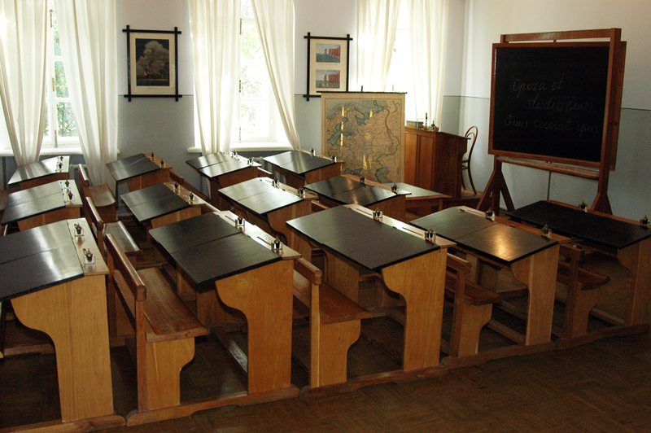
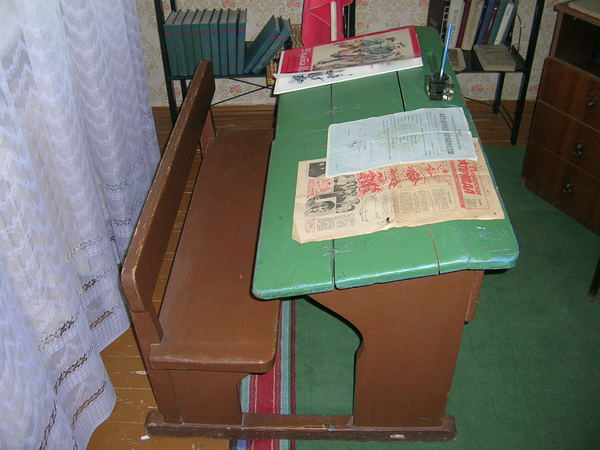
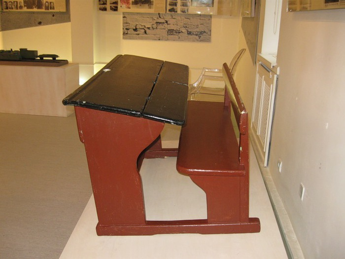
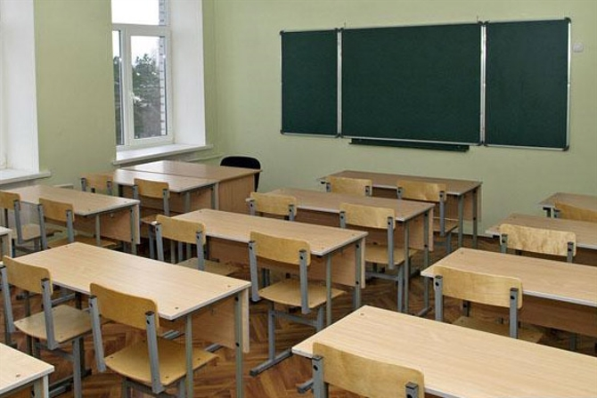

10.7. Система образования
Том 3 · osnovy-sociologii-tom-3.pdf · стр. 212 (кандидат) · Кандидат страницы PDF; требуется сверка · источник: PDF/DOC данной редакции.
Содержит авторские утверждения; их фактическая достоверность оценивается отдельно.
10.7. Система образования1
Система образования, представляющая собой одну из сфер профессиональной деятельности в цивилизованных обществах, в толпо-«элитарных» культурах служит воплощению в жизнь:
трёх взаимосвязанных принципов построения науки, допускаемой для рабов, которые были изложены в конце раздела 10.6.4;
а также и интегрального — главного: осмысленное адекватное восприятие жизни общества как биологически-социальной системы должно быть заблокировано для подавляющего большинства людей, что позволяет заправилам толпо-«элитаризма» собирать из индивидов «социальные механизмы», которые работают на осуществление возлагаемых на них целей, не осознаваемых ни их участниками2, ни подавляющим большинством окружающих.
Этот факт признаётся и некоторыми «независимыми» социологами, далёкими от поисков и воплощения в жизнь альтернативы толпо-«элитаризму». Так «Новые Известия» в номере от 29 января 1998 г. опубликовали интервью Юрия Коваленко с французскими социологами Моник и Мишель Пенсон под заглавием «Элита: честь нации или каста жрецов?».
«— Что же такое нынче элита? Ум, честь и совесть нации или клан, который преимущественно блюдёт собственные интересы?
— Прежде всего существует не одна элита, а несколько — экономическая, интеллектуальная, политическая, административная и т.д. Как социологи мы не любим слово «элита», которое имеет позитивный смысл. Элита предполагает принадлежность «к лучшим из лучших». Мы предпочитаем говорить о социально доминирующем классе».3
Далее сообщается, что:
«Во французской системе наследственная элита старых буржуазных и аристократических семей, которые занимают ключевые места в обществе и в государстве, как бы сливается с элитой, которой удалось с помощью дипломов4 совершить социальное восхождение. Между двумя элитами возникает солидарность5. Они действуют не то чтобы на мафиозной основе, но занимаются лоббированием, взаимной поддержкой не смотря на возникающие порой идеологические разногласия».
Надо иметь в виду, что всякая ветвь социологии всегда концептуально обусловлена. Кроме того в стабильно существующем на протяжении нескольких поколений толпо-«элитарном» общественном укладе всякая ветвь легитимной социологии обслуживает в русле господствующей концепции управления один или несколько общественных классов, но не всё общество в целом: в марксизме это явление было названо «партийностью науки», которая наиболее ярко проявляется именно в обществоведческих науках и менее ярко — в естествознании и его прикладных отраслях. Вследствие концептуальной обусловленности и «партийности» официально признаваемая в государстве социология, будь то социология правящего режима либо социология признаваемой системой «оппозиции», соблюдает «приличия», принятые в этом общественном укладе, вследствие чего на некоторые вещи социология только намекает (знающие поймут и намёки, а кто не понял — «тому и не надо»), а о некоторых — просто умалчивает6, будто их нет вовсе, и даже не желает их видеть в упор, когда на них указывают «посторонние».
Именно из этой особенности официально признаваемой в государстве социологии и возникают обороты речи типа «не то чтобы на мафиозной основе», поскольку быть «мафиози» в среде легитимной «элиты» почитается «неприличным», и кроме того — «элита» предпочитает не подавать себя остальному обществу как мафиозную группировку, под властью которой живёт общество, и отличающуюся от криминальных мафий только тем, что она обладает легальным статусом «элиты» и паразитирует на общественно полезных видах деятельности, а не строит свой бизнес на заведомо криминальных. Соответственно для обозначения по существу мафиозного характера деятельности представителей наследственных и дипломировано приобщённых «элит» подыскиваются «политкорректные» слова, не имеющие в обществе порицающего смысла: «лоббирование», «взаимная поддержка» и т.п. Но взаимная поддержка без каких-либо публичных деклараций о ней характерна в толпо-«элитарных» обществах прежде всего для деятельности мафий, порицаемых официальной правящей «элитой». Поэтому, если сдёрнуть саван «светски учтивых» выражений, не оскорбляющих чьего-либо персонального самомнения, то французская социология в приведённом выше фрагменте по существу признала кланово-мафиозный характер власти во Франции.
И соответственно «элита», не являясь ни «честью нации», ни «частью нации» («элитарии» — зарвавшиеся отщепенцы от своих народов), не способна состояться в качестве жречества — именно в силу своих эгоизма и более или менее ярко выраженной кастовой замкнутости от остального общества.
«— Разве во Франции элита не объединяет действительно лучших?
— Это не так. Нельзя сказать, что в её состав входят самые умные, самые образованные, самые культурные, которые стоят выше всех остальных. Французская система образования, вместо того, чтобы давать равное образование всем, занимается отбором. В результате в лучшие высшие школы почти не попадают дети из низов (выделено жирным нами при цитировании). Тут одно из двух. Либо такие дети идиоты — и это возможно: так думают некоторые, хотя мало кто об этом вслух говорит7. Либо существует проблема организации образования, которая не основывается на равенстве. Игра сделана заранее, всё предопределено, и только считанные единицы из народа пробиваются в престижные учебные заведения» (выделено курсивом нами при цитировании).
Однако французские социологи высказывают оба мнения (о причинах селекции учащихся и о предопределённости результатов отбора) в предположительно-гипотетической форме, уклоняясь от ответа на вопрос, истинно каждое из них либо ложно. Также обратим внимание на то обстоятельство, что последняя фраза в приведённой цитате означает:
Система образования в толпо-«элитарном» обществе — одна из многих системообразующих «игр с ненулевой суммой».
Кроме того отметим, что, признав систему образования в качестве одной из «игр с ненулевой суммой», в цитированном интервью французские социологи не вдаются в рассмотрение качества той науки8, на основе которой построена система образования во Франции вообще, и образования для «элиты», в частности. Это замалчивание проблемы или неспособность осознать её профессиональными социологами только усугубляет положение и перспективы общества.
Далее в упомянутом интервью сообщается, что во Франции, как и в других «развитых странах», только дипломы всего нескольких наиболее престижных вузов открывают путь не в пресловутый «средний класс», который в них относительно многочисленен, а в «высший свет» — относительно малочисленную «элиту», в пределах которой все, если и не знают друг друга лично, то хотя бы слышали и помнят друг о друге.
Т.е. в силу особенностей памяти подавляющего большинства людей социальная «элита» в любом государстве — это сообщество численностью не более 200 человек (семей) вне зависимости от численности населения страны9.
По существу приведённая выше характеристика системы образования как «игры с ненулевой суммой», данная французскими социологами Пенсонами, подтверждает ранее весьма деликатно высказанное ими мнение о кланово-мафиозном характере «элитарной» власти во Франции. Но при этом надо понимать, что толпо-«элитаризм» во Франции — только один из ликов толпо-«элитарной» культуры, царящей почти что во всём мире, и потому всё сказанное в приведённых фрагментах интервью о системе образования как о факторе воспроизводства толпо-«элитаризма» в преемственности поколений — справедливо и по отношению к системам образования всех толпо-«элитарных» обществ, хотя в каждом из них есть своя специфика10.
Но это же интервью обличает и мафиозный характер официально признаваемой государствами социологии в толпо-«элитарных» обществах. В частности, социология из пустой болтовни на темы о социальных проблемах, которые никто из правящих «элитариев» не собирается решать и не способен решить в практической политике11, преображается в жизнеречение (см. раздел 8.5 — том 2 настоящего курса), если по выявлении каких-то неопределённостей (а равно проблем12) в общественной жизни, социологи переходят к разрешению выявленных неопределённостей (а равно проблем) ко благу общества.
В рассматриваемом нами случае это предполагает выбор одного из двух в качестве истины:
либо дети простонародья (и не только во Франции, но во всех странах мира) действительно в своём большинстве — прирождённые идиоты, вследствие чего система образования и вынуждена повсеместно осуществлять выбор претендентов для подготовки к учёбе в наиболее «престижных» вузах, в результате чего и возникает «настоящая элита» всякой нации;
либо система воспитания и образования как семейного, так и школьного, действующая ныне во Франции, на Западе в целом и в любом толпо-«элитарном» обществе, делает из большинства родившихся младенцев идиотов не бесцельно, а целенаправленно — воспроизводя таким способом в преемственности поколений «элитарный» статус космополитичной «элиты» и её хозяев, а также и «элитарный» статус национальных «элит», лояльных проводимой в жизнь концепции глобализации, т.е. библейскому проекту порабощения человечества от имени Бога.
В действительности имеет место и то, и другое.
Факторы культуры, под властью которой живёт простонародье в толпо-«элитарных» обществах, таковы, что биологическое вырождение некоторой части населения в преемственности поколений — реальный факт, запрограммированный господствующей культурой как информационно-алгоритмической системой: алкоголь, табак, прочие наркотики, нездоровые во всех смыслах условия труда и жизни «социальных низов» и, тем более, «отбросов общества» — делают своё дело, в силу чего полноценные учебные программы просто неподъёмны для биологически ущербных детей, <u>ставших жертвами этих факторов на уровне генетики</u>.13
Но наряду с этим система образования действительно ориентирована на воспроизводство «элиты» и недопущение в «элиту» тех, чьё приобщение к «элите» по каким-либо причинам признаётся неуместным исторически сложившейся отчасти властной «элитой». При этом один из аспектов функционирования системы образования в толпо-«элитарном» обществе:
возбуждение мотивации к учёбе у одних и
подавление мотивации к учёбе у других.
Понятно, что если даже очень одарённый учащийся не мотивирован на учёбу, то спустя некоторое время по контрольным показателям освоения учебной программы он будет неотличим от прирождённого идиота, в принципе не способного освоить эту учебную программу. В этом случае вопрос о его дальнейшем обучении в сильном вузе, образовательные программы которого позволили бы раскрыться его одарённости в полной мере, даже не будет вставать: нет предмета для разговора — потенциальный гений опущен до уровня идиота, и тем самым вакансии в «престижных» областях деятельности сохранены для отпрысков «элитариев», и таким образом задача воспроизводства толпо-«элитаризма» в преемственности поколений успешно решена за счёт некоторой части населения на этапе мотивации детей к учёбе…
Если же отвергнуть толпо-«элитаризм» в качестве нормы бытия человечества, высказанная выше определённость в ответе на вопросы о биологической полноценности выходцев из простонародья и отборе кандидатов системой для дальнейшей учёбы сразу же ставит человека перед другими, не менее важными вопросами:
Что необходимо сделать, чтобы в последующих поколениях люди в большинстве своём не рождались идиотами, поскольку общество идиотов обречено на самоуничтожение?14
Что необходимо сделать, чтобы система воспитания и образования не превращала в полноценных идиотов вполне нормальных, биологически здоровых от предыстории зачатия людей?
Но после перехода к открытому обсуждению в обществе такого рода проблематики, мафиозно правящая «элита» сразу же прекратит финансирование социологов, обратившихся таким образом к нежелательному для «элиты» жизнеречению; а их социология сразу же утратит статус «науки» и перестанет быть официально признаваемой государством в таковом качестве (вплоть до отнесения её к «экстремизму»): ведь это же для «элитариев» очевидно — «чумазый не может…»15; а если и «может…», — то надо поискать среди его предков «элитариев», которые позволили себе сексуальную вольность с простолюдинкой16 (либо простолюдином, после чего рождённый от простолюдина ребёнок рос вне семьи своей матери, соблазнившейся на простолюдина); но главное — «чумазый не должен…»: его удел быть «чумазым» и потому всякий «неэлитарий» должен быть «опущен» по социальной иерархии вплоть до дна17.
———————
Образование в своей основе (т.е. по источникам большей части информации, которую необходимо осмыслить учащимся) по своему характеру может быть различным:
Текстуально-книжным. Исторически реально на Руси после её крещения такого рода образование имеет корни в византийской культурной традиции, а позднее (от эпохи Петра I) — в европейской науке. Со времён крещения Руси и до краха династии Романовых оно было доступно только «элите», а в советскую эпоху — стало доступно всем, кто того желал и был способен его освоить. Именно его в большинстве случаев и видят за термином «образование».
Чувственно-интуитивным. Оно во многом не формализовано теоретически единообразно, основано на личностном восприятии Жизни во всех её проявлениях, на переживаниях и сопереживаниях, на воображении. Оно свойственно эзотерическим традициям Востока и также было характерным для той самобытной культуры Руси изначальной, на которую со времён крещения в Х веке на протяжении всего последующего времени наслаивается текстуально-книжное образование, приходящее преимущественно с Запада, — разнородная теоретическая «словесность», большей частью вздорная18.
На основе того и другого система образования формирует надстройку субъективной осмысленности той информации, которую получают обучаемые из двух названных источников (чувств и текстов), т.е. формирует мировоззрение и миропонимание (в том смысле, как эти компоненты личностной психики определены в главах 2 и 3 настоящего курса).
———————
И хотя в библейской культуре обе названные разнородные информационные основы образования предстают как взаимно изолированные друг от друга, тем не менее они изначально были связаны друг с другом, а их взаимная изоляция — результат исторического развития науки и системы образования в русле библейского проекта порабощения человечества.
В эпоху, когда образование ещё не успело стать сферой профессиональной деятельности, оно было по существу своей организации семейным: один отец учил сына быть пахарем, другой отец учил сына быть государем, третий — ремесленником, четвёртый — купцом и т.п. И в смысле учительства между ними не было никакой разницы. Точно так же и девочек учили в семье прежде всего домоводству как профессии соответственно образу жизни социальной группы, к которой принадлежала семья, и может быть каким-то трудовым навыкам в профессиях, которые тот или иной общественный хозяйственный уклад относил к «женским».
Но во всех этих случаях образование было в своей основе чувственно-интуитивным, т.е. оно шло от конкретики жизни и на основе личностного восприятия этой конкретики строились мировоззрение и миропонимание, вырабатывалась система личностных жизненных навыков (включая и познавательно-творческие навыки).
Разница была только в общественно необходимом профессионализме19, который воспроизводился, развивался или угасал в каждой родовой (генеалогической) линии в преемственности поколений.
Но степень зависимости общества от каждого из носителей того или иного профессионализма — разная:
Пахарей, ремесленников и купцов много, и непрофессионализм кого-то одного из них в подавляющем большинстве случаев — его личностная и семейная беда, а не трагедия для общества в целом (конечно, при условии, что культура соответствующей отрасли деятельности соответствует потребностям общества на достигнутой им стадии исторического развития, а не проваливается катастрофически ниже этого уровня в силу каких-либо причин20: в этом случае остальные занятые в той же сфере деятельности в их большинстве достаточно высоко профессиональны, чтобы удовлетворить потребности общества в продуктах своего труда).
А руководителей высших уровней координации коллективной деятельности мало, но от профессионализма и непрофессионализма практически любого из них оказывается в зависимости всё общество:
<!-- -->
хороший воевода противника разгромил с минимальными потерями со своей стороны, агрессия врага сорвалась — всем хорошо; а воевода — дурак или изменник — сокрушительное поражение организовал, враг вторгся в глубины страны и творит, что хочет, — всем плохо;
дальновидный государь повелел крепости вдоль границ построить и в них гарнизоны держать и дураков-воевод со службы гонит — у супостата и в мыслях нет войной идти; дурной государь ресурсы прокутил на пирах, растранжирил в охотах и в прочем расточительстве, воеводы только и умеют, что жрать, казну расхищать, пьянствовать да по бабам шастать, иным порокам предаваться, — жди нашествия супостата и оккупации, либо бунта или революции.
Различная зависимость качества жизни общества от разнородного профессионализма в условиях господства внутрисемейного образования в древности стала фактором, создавшим предпосылки к тому, чтобы общества отождествили профессионализм в делах общественной в целом значимости, и прежде всего, — в деле управления коллективной деятельностью — с клановым и личностным врождённым благородством и достоинством потому, что в культурно и технологически неизменном мире того времени можно было жить всю жизнь на основе единственный раз освоенных в детстве и отрочестве знаний и выработанных навыков: они не устаревали.
Но в условиях необходимости работать от зари до зари при низкой энерговооруженности производства и соответствующих уровню энерговооружённости технологиях и организации, тем более в условиях сложившегося стабильного толпо-«элитаризма» — в течение жизни одного поколения невозможно было самостоятельно воспроизвести все знания и навыки, необходимые для того, чтобы войти в иную сферу деятельности так, чтобы превосходство в профессионализме в ней пришедшего со стороны новичка было общепризнанно. И прежде всего это касается сферы управления делами общественной в целом значимости. Т.е. в тех обстоятельствах жизни общества скептическое отношение к тем, кто выбился «из грязи — в князи…» было статистически правомерным.
Описанная выше взаимосвязь:
объективной зависимости общества в целом от определённых видов профессионализма,
исторически сложившейся статистики распространённости разнородных образованности и профессионализма в обществе,
возможностей индивида самостоятельно воспроизвести необходимый профессионализм в редких, но очень социально значимых профессиях, с нуля в короткие сроки по отношению ко времени активной жизни людей,
— стала необходимым, хотя и не обязательным условием для возникновения толпо-«элитаризма» и его устойчивости в преемственности поколений.
Т.е. монополизм на знания и навыки при зависимости большого числа людей от носителей некоторых видов профессионализма открывает для них возможность к установлению монопольно высоких цен на продукт своего труда (в чём бы эти монопольно высокие цены ни выражались в исторически сложившейся организации жизни общества и его культуре: в высоких чистых доходах, в социально-статусных привилегиях, в наличии свободного времени и т.п.). Однако:
Возможность эксплуатации такого рода «конъюнктуры рынка» с целью личного и семейно-кланового обогащения на фоне остального общества — искушение, а не благословение Божие тех, кто нравственно готов обогащаться на этой основе.
Это поясняется в Коране. Одно из мест, прямо указывающее на источник эксплуатации «человека человеком» — организованного системного паразитизма меньшинства на труде и жизни большинства:
«И когда постигнет человека зло, он взывает к Нам. Потом, когда обратим Мы это в милость от Нас, он говорит: “Мне это даровано по <моему> знанию”. Нет, это — искушение, но большая часть из них не знает <этого>!» (Коран, 39:49). См. также Коран, 28:75 — 81.
Тем более это касается политики, злоумышленно направленной на то, чтобы воспроизводить в преемственности поколений такого рода «конъюнктуру рынка» с целью паразитизма на труде и жизни других людей и их угнетения.
Такого рода коранические указания — жизненно состоятельны в отличие от марксистского утверждения о том, что источником эксплуатации «человека человеком» якобы является «частная собственность на средства производства»: частная собственность на средства производства как источник паразитизма на труде и жизни других людей и инструмент их угнетения — следствие: 1) порочной нравственности и 2) изначального превосходства в специфических общественно значимых знаниях и навыках одних над другими.
И поскольку рыночная саморегуляция порождает монопольно высокие цены на продукты некоторых видов деятельности (в том числе и на управленческие услуги общественного в целом уровня значимости), то все Откровения Свыше и этические нормы нравственно здравых культур обязывают всякого индивида в той или иной организационной форме возвращать избыточно им полученное обществу (финансирование общественно значимых проектов и некоммерческих по своему характеру видов общественно полезной деятельности) и непосредственно малоимущим при сложившейся «конъюнктуре рынка» (разного рода адресная помощь).
Но вопреки этому исторически сложившаяся система образования в толпо-«элитарных» культурах ориентирована на воспроизводство в преемственности поколений такого рода монополии на наиболее социально значимые знания и навыки, поскольку она является средством, позволяющим «элите» воспроизводить свой статус в преемственности поколений и взимать монопольно высокую цену за продукт своей какой ни на есть трудовой деятельности и получать так называемую «статусную ренту», не обусловленную никакой трудовой деятельностью.
Собственно на это и намекали французские социологи в интервью, выдержки из которого мы привели в начале раздела 10.7; эту же проблему сохранения и воспроизводства «элитарного» статуса обсуждали в переписке Александр Македонский и Аристотель, которую мы прокомментировали в разделе 3.1.
———————
Предпосылки к тому, чтобы образование стало сферой профессиональной деятельности, создала необходимость обеспечения хозяйства общества профессионалами в процессе развития технологий и организации экономики. Предпосылкой для этого послужило появление письменности. С появлением письменности люди стали в текстах фиксировать своё понимание тех или иных проблем в жизни общества, путей и способов их решения, описывать события прошлого и настоящего, возможного, по их мнению, будущего и деятельность в потоке этих событий. Лишённому хронологии эпосу стали сопутствовать исторические хроники, в которых все события соотносились с точными календарными датами. На основе письменности опыт и знания, зафиксированные в текстах, стали доступны для освоения вне прямого личностного общения носителей знаний и навыков и тех, кто желал их освоить. Благодаря этому опыт и знания ушедших поколений стали доступны для освоения потомкам. Грамотность стала социально значимым навыком, открывавшим перспективы, в принципе закрытые для неграмотных — как индивидов, так и социальных групп и обществ в целом.
С течением времени объём накапливаемых культурой текстов нарастал, а тексты тиражировались и сосредотачивались в библиотеках, которые функционировали большей частью при храмах. Храмовые библиотеки, содержавшие тексты по всем отраслям знания21, стали центрами образования на текстуально-книжной основе. Монополистом в деле предоставления образовательных услуг на профессиональной основе стала знахарская корпорация, в чьём ведении были храмы и их библиотеки. Однако:
В процессе воспроизводства самой себя в преемственности поколений знахарская корпорация строила образование по-прежнему на чувственно-интуитивной основе, дополняя его текстуально-книжным образованием. Её воспроизводство в своей основе имело отбор кандидатов-претендентов, которым предоставлялся доступ к некоему эзотеризму.
При предоставлении образовательных услуг обществу вне самой знахарской корпорации текстуально-книжная основа первенствовала, а чувственно-интуитивная оставалась в умолчаниях — её освоение по-прежнему оставалось в компетенции семейного образования. Однако, воспитание и образование в семье всегда не свободно, а «форматируется» господствующей культурой, а культура толпо-«элитарного» общества так или иначе ориентирована на подавление личностного потенциала развития всех — в том числе и за счёт подавления развития личностной культуры чувств и интуиции и разрушения взаимосвязей компонент психики и хаотизации её алгоритмики.
Т.е. знахарство обеспечивало образовательное преимущество «элиты» над простонародьем (за счёт большей узко специальной и общей информированности «элиты»), и своё собственное превосходство над «элитой» (за счёт превосходства в чувственно-познавательных навыках). Эту проблематику мы затронули в разделе 3.1 в аспекте следствий — мировоззренческого разделения толпо-«элитарных» обществ, которое не является социально-стихийным явлением, а представляет собой результат деятельности двух систем образования: для знахарства, и для толпы — «элиты» и простонародья.
———————
Описанным выше характеризовался начальный период становления системы образования, действующей на профессиональной основе.
В последующем, — примерно во времена появления первых университетов22 в средневековье, — знахарство перестало оказывать систематические образовательные услуги вне самой знахарской корпорации подобно тому, как это было во времена Аристотеля и Александра Македонского (см. раздел 3.1).
Это стало для знахарства возможным потому, что на основе текстуально-книжного образования сформировалась корпорация «книгочеев», в большинстве своём не освоивших чувственно-интуитивную составляющую образования вообще или вопреки чувствам воспринимающих Жизнь исключительно через тексты, которые стали для книгочеев своего рода «информационными фильтрами»: в том смысле, что если нечто в «авторитетных» книгах описано как истина, то оно для книгочея существует (либо существовало) и в Жизни как истина; а если в «авторитетных» книгах не описано либо в книгах говорится, что этого не может быть, а в Жизни с этим книгочей столкнулся, то это для него лично — «обман чувств» или «помрачение ума», а свидетельства очевидцев — «бред» или «заведомый вымысел»23. Т.е. возник довольно широкий социальный слой, характеризующийся тем, что у его представителей образное мышление либо подавлено или не развито, либо воспитанных так, что оно вытеснено из процесса мыслительной деятельности в тех или иных сферах деятельности.
И эта «корпорация книгочеев» стала монополистом в толпо-«элитарных» культурах в деле оказания толпе образовательных услуг на профессиональной основе — и «элите», и простонародью. Наука с грифом «для толпы», положенная в основу образования, предварительно уже была «отформатирована» знахарской корпорацией под свои цели через свою периферию в науке, о чём речь шла в разделе 10.6.
Эта система образования под грифом «для толпы», в том числе и «элитарной», в толпо-«элитарном» обществе — вне знахарской корпорации — издавна воспринимается как единственно возможная, безальтернативная и эффективная. Именно вследствие этого французские социологи в цитированном выше интервью и не высказывают каких-либо претензий к официальной науке, на основе которой сложилась система образования, роль которой в воспроизводстве в преемственности поколений «элиты» (а по умолчанию — толпо-«элитаризма») они обсуждают.
Но утверждению о зомбирующем характере образования «для толпы» — и прежде всего образования высшего — неизбежно сопутствует вопрос: А почему оно не осознаётся в таковом качестве ни научно-преподавательским сообществом, ни студентами?
Причина именно в том, что в основе системы современного образования лежат тексты, а не практическая работа обучаемых (а так же и многих преподавателей) в соответствующей отрасли деятельности, в которой обучаемые на основе результатов своей работы могли бы судить о достоверности теорий, описывающих эту сферу жизни общества. «Производственная практика» в период обучения носит краткосрочно-эпизодический характер и только отчасти дополняет освоение текстового материала. Она даёт обучаемым весьма общее и поверхностное представление о сфере деятельности, к работе в которой их готовит вуз, к тому же — с низовых уровней иерархии должностей и компетенции; а задачи идейного порабощения общества решаются на надгосударственном уровне управления, что лежит вне круга интересов большинства, целенаправленно формируемого толпо-«элитарной» культурой.
Поскольку никто в темпе освоения учебной программы не в состоянии проверить на истинность все мнения, высказываемые в учебниках в качестве достоверно установленных научных фактов, то изрядную долю учебного материала, хотим мы того либо же нет, сначала школьник, а потом и студент принимает без сомнений и без соотнесения с жизнью в качестве научно установленной истины. Как показывает история развития науки и образования, это справедливо и в отношении жизненно состоятельных утверждений, и в отношении всевозможных научных заблуждений, в истинности которых могут быть убеждены на протяжении длительного времени целые общества.
При этом подавляющее большинство программ профессиональной подготовки не включает в себя освещение проблематики выработки критериев истинности теорий, на которых основывается соответствующая профессиональная деятельность. Эта проблематика остаётся в умолчаниях, что подразумевает «очевидность» нахождения ответов на вопрос «что есть истина?» или полную неактуальность этого вопроса.
Кроме того, учебные планы не оставляют свободного времени для того, чтобы школьники и студенты могли бы самостоятельно выйти за рамки учебных программ, выработать и освоить какие-то знания и навыки, программами не предусмотренные, но с позиций которых они могли бы взглянуть на учебные программы со стороны и задать преподавателям разного рода неудобные вопросы, на которые в учебных программах ответов нет, либо ответы — вздорны, если их соотнести с жизнью как таковой. Кроме того, толпо-«элитарная» культура вовлекает подростков и молодёжь в различные потоки суеты и пороки, в результате чего освоение знаний и выработка навыков вообще выпадает из круга интересов учащихся.
Став по окончании вуза дипломированным профессионалом, бывший студент соотносит поступающую в ходе работы оперативную информацию с теми теориями, которые ему стали известны из вузовского курса. На основе такого соотнесения оперативной информации и теорий вырабатывается и проводится в жизнь подавляющее большинство решений во всех сферах профессиональной деятельности.
Из этого можно сделать некоторые выводы:
Вследствие своего абстрактно-текстуального характера нынешнее школьное и вузовское образование в значительной степени неизбежно представляет собой «программирование психики» обучаемых готовыми к употреблению рецептами решения стандартных задач в соответствующей сфере деятельности, которые не имеют непосредственной связи с жизнью в психике студентов.
В силу первого общепризнанность определённых теорий в качестве истины обуславливает единообразие реакции разных специалистов на поступление единообразной оперативной информации. При этом господство определённых по содержанию теорий реализует одни возможности, закрывая реализацию других возможностей. Иными словами, профессиональная деятельность, рассматриваемая как статистика индивидуальной деятельности дипломированных специалистов, окончивших соответствующие вузы, оказывается запрограммированной на десятилетия вперёд содержанием теорий, которые были представлены в учебных программах в качестве адекватного жизни знания.
Потребность в создании новых и развитии прежних теорий при таком характере высшего образования возникает только под давлением жизненных обстоятельств, когда кто-либо осознаёт, что исторически сложившийся теоретический аппарат не обеспечивает требуемого качества решения стандартных задач либо не пригоден к решению задач нестандартных, перед необходимостью решения которых жизнь поставила общество.
В таких условиях новые теории при своём появлении большей частью отвергаются соответствующей профессиональной корпорацией без их рассмотрения по существу. Причина такого отношения к ним состоит в том, что если новые теории оказываются более эффективными, чем прежние, то они обесценивают профессионализм тех, кто привык монопольно эксплуатировать соответствующую сферу деятельности на основе прежних теорий; а освоение новых теорий, во-первых, требует выявить и отказаться от мнений и предубеждений, господствующих над психикой индивида, и во-вторых, требует свободного времени и сил для освоения новых теорий.
Для того, чтобы новые теории были признаны жизненно адекватным выражением истины и были включены в образовательные стандарты, став основой профессиональной деятельности, необходима либо смена поколений, либо признанный государством или обществом крах соответствующей профессиональной корпорации, открывающий дорогу для становления на основе иных теорий новой профессиональной корпорации.
Эти факторы имеют специфическое проявление в тех сферах деятельности, профессионализм в которых основан на социолого-экономических теориях, т.е. в государственном управлении24 и в управлении предприятиями. Причина этого в том, что качество жизни подавляющего большинства членов индустриального и «постиндустриального» общества обусловлено не столько трудом каждого из них, сколько характером и качеством государственного управления общественным объединением разно-специализированного труда и его развитием (основная масса потребляемой нами продукции — продукт коллективного труда специалистов-профессионалов разных отраслей, а при более глубоком рассмотрении — продукт управления макроэкономического уровня подготовкой специалистов и координации их деятельности). По отношению к жизни общества и его самоуправлению это практически означает, что политика, объективно возможная на основе одних социолого-экономических теорий, неосуществима на основе содержательно иных теорий. С другой стороны политика, неизбежная на основе одних теорий, вовсе не является безальтернативной при переходе к теориям, выражающим иную нравственно обусловленную целеустремлённость. И если цель социолого-экономического образования «для толпы» — обеспечить эксплуатацию страны руками и «интеллектом» её же населения, то достижение этой цели в сложившейся системе образования запрограммировано и характером процесса обучения, и содержанием учебных программ.
———————
Под давлением геополитической конкуренции государств друг с другом система образования в историческом развитии обществ открывала доступ к образованию тем социальным группам, для которых в прошлом она была недоступной. Дело в том, что в геополитической конкуренции, рассматриваемой на исторически продолжительных интервалах времени, охватывающих жизнь нескольких поколений, выигрывают те общества, которые превосходят своих конкурентов по качеству населения:
его коммуникабельности (предопределяющей возможности взаимодействия индивидов в ходе коллективной деятельности)25,
многогранности и высоты профессионализма,
мобильности между отраслями деятельности, обеспечиваемой многогранностью профессионализма и освоением людьми познавательно-творческого потенциала26.
Качество населения на основе исторически сложившейся культуры создаётся как институтом семьи, так и системой образования27, которые, в свою очередь, оказывают воздействие на культуру общества как на информационно-алгоритмическую систему, задающую начальные условия жизни последующих поколений.
Но на протяжении всего времени своего развития в условиях толпо-«элитаризма» система образования строилась с учётом пожелания, высказанного Александром Македонским, чью переписку с Аристотелем по этому вопросу мы приводили и анализировали в разделе 3.1.
При этом в своём историческом развитии на протяжении многих веков система образования, осуществляемого на профессиональной основе, вовлекала в себя всё большее количество детей и молодёжи, а потом и изрядной доли взрослого населения. В результате в наши дни в так называемых «развитых странах» какое ни на есть всеобщее образование стало обязательным для всех детей, поскольку без него невозможна профессиональная деятельность практически ни в одной отрасли, и оно же в большинстве государств является основой для получения «высшего образования», которое почти автоматически открывает дорогу обладателю диплома в большинстве стран в экономически не плохо обеспеченный «средний класс» (постсоветская Россия к числу этих стран не принадлежит).
———————
Как уже указывалось, в цивилизации, основанной на технике и коллективном специализированном профессиональном труде, качество жизни каждого определяется не столько его собственными умом, трудоспособностью, разносторонностью профессионализма и его уровнем, сколько:
во-первых, — действующей концепцией управления делами общества в целом, включая и его экономику, и,
во-вторых, — качеством управления по проводимой в жизнь концепции как на макроуровне (общегосударственном и глобальном), так и на микроуровне (на предприятии, где человек работает, и в населённом пункте, где он проживает).
Поэтому вторая по значимости (после методологии познания и творчества) важнейшая составляющая образования — образование управленческого характера вообще, и в особенности — охватывающая проблематику управления обществом в целом.
———————
Поэтому в толпо-«элитарных» культурах в системе «высшего образования» также есть своя специфика, связанная с обучением в малочисленных «наиболее престижных» вузах, которые являются основной «кузницей кадров» высшей правящей «элиты», осуществляющей управление макроуровня как в пределах юрисдикции государств, так и надгосударственного уровня.
Эта специфика состоит в том, что в странах Запада «наиболее престижные» вузы оказывают не только образовательные услуги, но являются и первой ступенью системы отбора и продвижения претендентов в «высший свет» — кадров, которые в перспективе займут высшие управленческие должности в государственном аппарате и структурах бизнеса.
Эта специфика функционирования «наиболее престижных» вузов наиболее зрима в США вследствие того, что США представляют собой уникальное общество и уникальную государственность, возникшие в результате «перезагрузки» библейского проекта порабощения человечества от имени Бога, который в Европе к концу XII века зашёл в тупик28. Уникальность США в том, что:
Это — общество без предыстории, которая была бы запечатлена в его эгрегорах и через них продолжала бы оказывать своё воздействие на текущую политику и жизнь, как это имеет место во всех других обществах.
Государственность США изначально создавалась масонством под воплощение в жизнь библейского проекта в оболочке идей буржуазного либерализма29.
И потому в США масонству не надо было проникать в сложившиеся ранее без его опёки государственные структуры, чтобы взять под свой контроль их деятельность и посредством подчинённого себе государственного аппарата в дальнейшем оказывать воздействие на развитие культуры соответствующего народа и его жизнь, как это имело место в остальном мире и, прежде всего, — в Европе, где:
<!-- -->
история возникновения и развития государственности большинства народов прямо или опосредованно восходит к государственности Римской империи, сложившейся в «добиблейские времена» (а там, где «римско-европейские корни» государственности не прослеживаются, — в её основе лежит местная, — не менее древняя, чем Рим и Библия, — самобытность, не во всём совместимая с библейским проектом);
в силу не полной совместимости с библейским проектом исторически сложившуюся государственность масонству приходилось захватывать и модифицировать, либо уничтожать и создавать с нуля (как во Франции в 1789 — 1794 гг. и в России в 1917 г.), но предыстория и после этого продолжала и продолжает оказывать своё воздействие на текущую жизнь через издревле существующие эгрегоры в прошлом самобытных обществ.
И соответственно различию обществ, обладающих предысторией, и искусственно организованного общества США — их система высшего образования тоже обладает своей спецификой, отличающей её от высшего образования в «старом свете» — хоть в «цивилизованной» Европе, хоть на территории СССР.
Сначала отметим внешне видимый аспект различий:
Университет в «цивилизованной» Европе (т.е. вне России30) до настоящего времени — в своей организационной основе повторяет средневековый европейский феодализм: ректор — «монарх», деканы факультетов — «вассалы» первого уровня, преподаватели — прочая «аристократия», студенты — «простонародье», учёный совет — «святая инквизиция». За прошедшие века на этой основе много чего наросло, по какой причине она не бросается в глаза. Наружу выпирает только гимн «Гаудеамус» той феодальной эпохи, первое упоминание о котором (как сообщает «Википедия»: http://ru.wikipedia.org/wiki/Gaudeamus) относится к 1267 г.
Университет США — в своей организационной основе повторяет организацию США: ректор — «президент», деканы факультетов — «губернаторы», преподаватели — аналог «среднего класса», попечительский совет — «масонство высшее», студенчество — «простонародье», студенческие общества, в том числе и тайные — «масонство низших степеней посвящения».
Причём, всё, что касается масонства в предшествующей фразе, — это не только метафора, указывающая на роль соответствующих организаций в жизни университетов США, но и действительность, поскольку всё американское общество и его сфера управления изначально пронизаны структурами масонства разных иерархических уровней, охватывающих весь спектр социально значимых идей (масонство как и фашизм, одним из инструментов осуществления которого оно является, — идеологически всеядно).
Кроме того, изрядная доля науки в США делается в вузах, и это обстоятельство создаёт основу для того, что лекции студентам читают учёные — либо действующие, либо приступившие к преподаванию по завершении своей научно-исследовательской карьеры. По этой причине доля преподавателей-книгочеев, которые сами не имеют опыта работы в соответствующих отраслях науки и техники, в вузах США существенно ниже, чем в вузах СССР и постсоветской России31.
При этом и студенты в таких условиях имеют лучшие возможности для того, чтобы учёбе сопутствовало начало их собственной — не «игрушечной» (как у нас), — а настоящей научно-исследовательской и проектно-конструкторской деятельности в проектах, которыми руководят их преподаватели32.
Однако повторим ещё раз, что науку и систему высшего образования в США, само образование в вузах США, не следует идеализировать и перед ними преклоняться, но следует помнить и понимать, что наука и образование в США хорошо служат либерально-буржуазной версии библейского проекта порабощения человечества от имени Бога и уничтожения неподдающихся процессу «оцивилизовывания» под его нормы, и это греховно в своей сути.
——————
Напомним, что полная функция управления может осуществляться только в интеллектуальной схеме управления, которая представляет собой разновидность схемы управления предиктор-корректор (см. гл. 6 — том 1 и раздел 8.5 — том 2 настоящего курса). Схема управления предиктор-корректор может быть условно представлена как сочетание предиктора и программно-адаптивного модуля: работе предиктора соответствуют 1‑й — 4‑й этапы полной функции управления, а работе программно-адаптивного модуля соответствуют 5‑й — 7‑й этапы полной функции управления, хотя предиктор контролирует в ходе своей деятельности и их, а также отчасти соучаствует в реализации этапов полной функции, отнесённых к программно-адаптивному модулю. При таком разграничении компетенции:
Государственность на основе системы разделения властей в её описанном ранее (раздел 8.5, том 2) виде, представляет собой всего лишь программно-адаптивный модуль в схеме управления предиктор-корректор и — сама по себе — управленчески несамодостаточна, во многом безынтеллектуальна, и потому неспособна к обеспечению самоуправления общества по полной функции управления.
Теперь можно перейти к вопросу о том, как система высшего образования США воспроизводит правящую «элиту» — управленцев-профессионалов для макроуровня всех ветвей программно-адаптивного модуля управления США по полной функции.
——————
Соответственно изначальной ориентации «американского образа жизни» на воспроизводство толпо-«элитаризма» система образования США, включая и «наиболее престижные» вузы, не даёт знаний и навыков, необходимых для освоения концептуальной властности. Она воспроизводит в преемственности поколений кадры для обслуживания программно-адаптивного модуля системы управления.
И оказывается, что в этом деле предоставление доступа к освоению знаний и профессиональных навыков — не единственная и при том не главная, а вспомогательная её функция.
Прежде всего необходимо отметить, что на макроуровне в государственности и бизнесе США статистически преобладают выходцы всего из нескольких «наиболее престижных» вузов страны, из которых бόльшая часть — университеты33 (в частности, входящие в «Лигу плюща» — ассоциацию восьми «самых элитных» частных американских университетов, см. http://ru.wikipedia.org/wiki/Лига_плюща). Конечно, каждый университет обладает своеобразием, налагающим «фирменную печать» на его выпускников. Но наряду с этим своеобразием есть и нечто общее. И это общее в аспекте рассмотрения вопроса о воспроизводстве управленческого корпуса макроуровня программно-адаптивного модуля, обладающего достаточно высоким профессионализмом, включает в себя следующие факторы:
Американский вуз (университет) в большинстве случаев — это обособленный от остального общества маленький городок, в котором подавляющее большинство населения обновляется раз в 5 — 6 лет соответственно продолжительности полного учебного курса. В этом городке можно жить годами, не покидая его пределов, поскольку там всё есть: само жильё, система бытового обслуживания, кафе и магазины, места отдыха и т.п.
Учебный процесс как таковой (т.е. посещение лекций, семинаров, практических занятий, подготовка курсовых и дипломных работ) — явление,
<!-- -->
безусловно необходимое для воспроизводства профессионализма в обществе, в том числе и управленческого,
однако не достаточное и не характеризующее само по себе «наиболее престижные» вузы, которые, обретя качество «престижности», могут позволить себе выбрать из множества абитуриентов тех, чей потенциал позволяет освоить их учебные программы, в некоторых аспектах действительно требующие от студентов большего, нежели учебные программы «рядовых» вузов.
<!-- -->
Главная миссия «наиболее престижных» вузов — первичный отбор кандидатов в будущие управленцы макроуровня государственности и бизнеса США.
Причём алгоритмика отбора распределена по психике множества людей и вложена в традиции вуза, вследствие чего отбор осуществляется в режиме автомата, а большинство его участников не видят процесса в целом; их не интересует рассматриваемая нами проблематика, и потому они не осознают, что и как происходит с ними, и что сами они творят в отношении других.
Это всё — самое важное в деятельности «наиболее престижных» вузов — происходит вне учебного процесса, а обособленность университетских городков создаёт для осуществления отбора определённые предпосылки, обусловленные чисто психологическим фактором: Молодёжь оказалась вне систематического контроля семьи — чем заняться в свободное время? — Основные ответы на последний вопрос следующие:
дополнительным самообразованием сверх учебной программы,
спортом,
неким бизнесом,
общественной деятельностью,
общением и развлечениями, вполне естественными для людей,
наслаждаться удовольствиями деградационно-паразитического характера (выпивка, прочая наркота, разврат, азартные игры и т.п.).
Более или менее ярко выраженные наклонности ко всему перечисленному свойственны практически всем, — исключения редки. Но у каждого есть одна или две доминанты. И вопрос в том, кто и как эти доминанты канализирует, либо они проявляются социально стихийно?
В вузах США развита система канализации всего этого, разводящая потоки молодёжи, куда надо, по принципу «каждому своё», и именно на её основе осуществляется отбор кандидатов в будущую правящую «элиту» страны.
——————
Большинству наших соотечественников, получивших или получающих высшее образование, памятно, что началом студенческой жизни было «посвящение в студенты (курсанты)». У нас это — торжественный вечер в первые дни осеннего семестра, с участием руководства вуза и факультетов, переходящее в концерт художественной самодеятельности студентов 2‑го и последующих курсов, по завершении которого все расходятся по домам или «кучкуются» для продолжения вечеринки и знакомства в инициативном порядке — по способностям и интересам участников. Последствий для дальнейшей вузовской и послевузовской жизни — в общем-то никаких, если, конечно, кто по пьяни не нашёл для себя «приключений с последствиями».
В США тоже есть «посвящение в студенты (курсанты)», хотя там свои традиции его проведения. Но там оно «с последствиями», поскольку по своей сути является репетицией реального посвящения в организации масонства или в организации, находящиеся под контролем масонства.
Кроме того, изолированность от общества вузовского городка и «профессиональная» однородность его населения приводит к тому, что в этом специфическом микрообществе выстраивается иерархия по признаку старшинства курсов, в которой и протекает вся студенческая жизнь вне аудиторий: рядовой первокурсник в бытовых мелочах не имеет права на то, на что имеет право рядовой второкурсник и так далее по иерархии вплоть до аспирантов. Как минимум, это выражается в специфическом наименовании студентов каждого из курсов34. А как максимум, — может дополняться тем, что в студенческой среде возникает явление, известное нам по отечественным вооружённым силам под названием «дедовщина», в котором всякий «молодой» подвергается целенаправленному унижению корпорацией «стариков» и вынужден быть слугой кого-то из старших, кто считается его «опекуном» и «наставником» по жизни; но и сами «опекуны» и «наставники» в прошлом прошли через то же самое.
И хотя всё это делается как бы в шутовском порядке и в подавляющем большинстве случаев менее жёстко и жестоко, чем в российской казарме, в действительности это — значимая составляющая жизни, и она серьёзно поддерживается и администрацией вуза, и теми, кто пришёл в вуз из разного рода «закрытых пансионов», где уже была такого рода иерархия «молодых» и «стариков»35: это должно существовать, каждый должен знать свой статус, но формально юридически принцип о равноправии всех граждан не должен нарушаться, т.е. иерархия не совершает преступлений, предусмотренных уголовным кодексом (по крайней мере, не совершает массово тяжких преступлений, которые затруднительно скрыть «этикой» закрытой корпорации, хотя бывают случаи, что недоросли, «заигравшись», совершают и такого рода преступления, которые скрыть не удаётся).
Но наряду с этой открытой для публичного обозрения иерархией, складывающейся в каждом вузе на основе его традиций, в вузах США существует и скрытая иерархия, принадлежность к которой обеспечивает более высокий фактический социальный статус, нежели статус в публичной иерархии.
В вузах США существуют «клубы по интересам». В одном вузе может быть несколько различных «клубов по интересам». Среди них есть открытые, членом которых может стать каждый пожелавший. Но есть и «закрытые», среди которых можно выделить две категории: к первой принадлежат те «клубы», стать кандидатом в члены которых можно по собственной инициативе (после «кандидатского стажа» происходит либо приём в члены «клуба», либо отказ в приёме); а ко второй категории принадлежат те «клубы», членом которых можно стать только по приглашению самих «клубов»36.
И там нет никакой социальной стихийности: под «хи-хи — ха-ха» и шуточные игры в «клубные тайны» в период учёбы в вузах, особенно в «наиболее престижных», идёт выявление и отбор кандидатов на то, что они, делая карьеру после окончания вуза, в будущем лет через 20 войдут в правящую «элиту» США — станут действующими управленцами в их программно-адаптивном модуле — в государственности, в большом и в очень большом бизнесе, включая и транснациональный.
Некоторые из «клубных тайн» связаны с унижением участников и погружением их в мерзости. Это — системное средство толпо-«элитарных» культур и субкультур, предназначение которого — психологическое подавление личности, первичное корпоративное сплочение и обеспечение корпоративной замкнутости, основанное на том, что люди в большинстве своём стыдятся огласки фактов их собственного унижения и соучастия в мерзостях.
Т.е. дело обучения студентов в «наиболее престижных» вузах подчинено делу формирования некой непубличной корпорации — кадрового резерва «партии РЕАЛЬНОЙ власти», ветви которой действуют во всех структурах программно-адаптивного модуля системы управления США по полной функции.
Образно говоря, это такой многослойный «комсомол», — при постепенном погружении в его глубины с возрастом и карьерой, оказывающийся «партией РЕАЛЬНОЙ власти», хотя до его глубин доходят не все из тех, кто некогда вступил в «пионеры».
Т.е. в систему высшего образования под властью библейского проекта тоже проникает «соединительная и нервная ткань» системы, связывающая её компоненты воедино и обеспечивающая их взаимодействие в процессе самоуправления системы и управления ею — масонство, действующее на основе принципов:
каждый в меру посвящения работает на то, что понимает, а в меру непонимания — на тех, кто посвящён в высшие, чем он степени, и на тех, кто понимает больше вне зависимости от наличия посвящения или его отсутствия;
неукоснительное подчинение и ответственность носителей низших степеней перед высшими.
И в «наиболее престижных» вузах США этот фактор выражен наиболее ярко: общество «Черепа и костей» Йельского университета и т.п. закрытые «клубы по интересам» — «призывные пункты» масонства и связанных с ним непубличных корпораций, подчинённых библейскому проекту.
Т.е. система «клубов по интересам» в вузе выявляет и открывает возможности к карьерному росту молодёжи, обладающей психотипом (нравственностью и структурой психики) и идейной убеждённостью, отвечающими требованиям заправил библейского проекта к кадровому составу программно-адаптивного модуля системы управления обществом по полной функции.
——————
В принципе в вузе США можно учиться, не проявляя инициативы к тому, чтобы вступить в закрытый «клуб по интересам»; можно отказаться от приглашения вступить в такого рода клуб; и не особо придерживаться традиций публичной жизни университетского городка. Это не скажется на получении диплома, но спустя несколько десятилетий, такое «ребяческое» проявление индивидуализма и отказа от корпоративности (в умолчаниях остаётся: обслуживающей библейский проект) будет иметь следствием ограничение возможностей карьерного роста:
выйти на уровень «среднего класса», тем более хорошему специалисту, мешать не будут;
но в высшие эшелоны «партии реальной власти» большинству таких индивидуалистов будет не войти — доступ туда только через закрытые «клубы по интересам», действующие в вузах США, и через вступление в масонство; исключения могут быть, но они редки и всё равно основываются на том, что «братаны»-масоны «дают добро», оценив психологию и способности «самостийного» претендента, кто-то ручается за такого нужного системе «профана», устанавливается опёка над ним и т.п. Но это для системы редкие исключения, поскольку всегда есть свой кадровый резерв на все случаи жизни.
Причина ограничений в делании карьеры «индивидуалами» в том, что:
Система «разделения властей» без «соединительной и нервной ткани» масонства не обеспечивает управления обществом в русле библейского проекта даже в пределах компетенции программно-адаптивного модуля.
Соответственно этому обстоятельству, назначение системы студенческих «клубов» — вовлекать молодёжь в корпоративность, обслуживающую проект, всё более «элитаризующуюся» в осознании некоего «избранничества» и обособляющуюся от остального общества по мере продвижения вверх по её иерархии вплоть до уровня полного пренебрежения к «быдлу» и его жизням: без этого были бы невозможны ни подрыв американского броненосца «Мэн» (Maine) в Гаване в 1898 г., давший США повод к началу войны против Испании за контроль над её бывшими колониями37; ни Перл-Харбор в декабре 1941 г., давший повод к вступлению США во вторую мировую войну ХХ века38; ни 11 сентября 2001 г. в Нью-Йорке, давшее повод к вторжению США в Афганистан и позднее в Ирак — в организацию каких преступлений высшая «элита» США внесла свой вклад.
Однако имея за собой в прошлом множество такого рода «скелетов в шкафу»39, представители высшей «элиты» США вышколены системой настолько, что никогда не позволят себе ничего подобного тому, что позволяют себе российские «элитарии» того нравственно-психологического типа, к которому принадлежат С. Бодрунов и Д. Евсюков40: такие типы будут отбракованы системой на ранних этапах, поскольку представляет угрозу для её стабильности; либо же они будут задолго до прихода в высшие эшелоны власти приучены к соблюдению корпоративной дисциплины и норм корпоративной «этики» в том числе и в отношении остального общества.
Здесь надо указать и на принципиальное отличие того, что понимается под принадлежностью к «элите» самими «элитариями» в США и в России-СССР-России:
Для «элитария» США выход на определённый уровень в скрытной социальной иерархии масонства — это возможность занять определённые должности в публичной иерархии аппарата государственной власти и в бизнесе с принципиальной оговоркой: в случае если «партия РЕАЛЬНОЙ власти» (эту роль в США исполняет скрытная иерархия масонства) призовёт к действию или предложит действовать. Пока этого не произошло, всякий «элитарий» по отношению к потенциально открытым для него при его непубличном статусе публичным должностям — «запасной игрок», который может заниматься, чем ему угодно, при поддержке избранной им деятельности всё той же «партией власти», т.е. при соответствующем уровне социальной защищённости и экономической обеспеченности, гарантированными системой при условии, что он соблюдает корпоративную дисциплину и «этику» непубличной иерархии, к которой приобщился ещё в вузе.
Для отечественного «элитария» существует только публичный иерархический статус: если он вышел на определённый уровень в публичной иерархии, то «раздайся грязь — г…но плывёт…» — обеспечьте ему максимальный уровень вседозволенности: подайте ему все реальные и мнимые блага, которые соответствуют этому уровню, и обеспечьте ему возможность «вытирать ноги» обо всех, кто в публичной иерархии ниже. Образчики именно этого (хотя каждый по своему) и явили С. Бодрунов в Петербургском телецентре, а Д. Евсюков в московском торговом центре «Остров» и ранее неоднократно по службе.
То обстоятельство, что в публичной иерархии многими уровнями ниже него могут действовать индивиды, обладающие куда более высоким статусом в скрытных иерархиях толпо-«элитаризма», — эта мысль, которая в буйну голову отечественного «элитария» никак не укладывается.
Олицетворением этого нравственно-психологического типа стала старуха из «Сказки о золотой рыбке» А.С. Пушкина: она сделала в течение нескольких дней карьеру в публичной иерархии от простолюдинки до царицы и потом возжелала, чтобы золотая рыбка, которая ей всё это и обеспечила, — начала бы ей служить по-холопски и была бы у неё на посылках… Вести себя так, будто «ухватили Бога за бороду», — для отечественных «элитариев» — норма, которая пресекается только «полным обломом»: индивидуальным либо коллективным — вопрос обстоятельств41.
Это различие «элитариев» — «у них» и «у нас» — носит характер мировоззренчески-психологический, и большей частью не осознаётся самими участниками внутриобщественных отношений. Оно обусловлено не тем сводом знаний и освоенных навыков, которые «их» и «наши» «элитарии» получили в вузах, а системой отбора кандидатов в непубличную корпорацию, которая действует в «наиболее престижных» вузах США и аналогов которой не было и нет в вузах России.
- «Элита» на Руси:
<!-- -->
беззастенчиво антинародная эгоистичная корпорация, которая желает, чтобы народ признал, что он — быдло, перед которым «элита» в праве ни за что не отвечать;
никаких идей, кроме передачи «элитарного» статуса детям и внукам у отечественной «элиты» за душой реально нет, если какие-то идеи и провозглашаются её якобы смыслом жизни, то это — всего лишь маскировка «элитарного» паразитизма;
если у отечественного «элитария» возникает реальная или иллюзорная возможность приобщиться к «мировой элите», то ради этой цели он готов продать не только Родину, но вообще всё.
<!-- -->
- А в США «элита», при всех её пороках:
<!-- -->
предпочитает, чтобы народ был убеждён в том, что «элита» ответственна перед ним и работает на общенародные интересы, будучи «авангардом» народа в его общественно-историческом развитии;
при этом в умолчаниях остаётся, что общественно-историческое развитие в своей сути — продвижение библейского проекта порабощения человечества от имени Бога в «нецивилизованные» и «неправильно цивилизованные» регионы планеты.
Т.е. многие отечественные «элитарии» не состоялись бы в таковом качестве в США, поскольку их психотип и отсутствие хоть какой-то идейной убеждённости были бы признаны неприемлемыми для непубличной корпорации, осуществляющей реальную власть в системе «разделения властей»; а «элитарии» США не смогли бы состояться в таковом качестве в России, поскольку той непубличной системы, которая их рекрутировала и вела к вершинам публичной карьеры в США, в России нет, и здесь «элита» формируется на принципе отсутствия какой бы то ни было идейной убеждённости, открывающего дорогу проявлениям индивидуального и корпоративного паразитизма на народе и окружающей природной и социальной среде.
В обоих случаях образование — знания и навыки, приобретённые в вузе, — только дополнение к этим принципам.
В жизни различие «элитариев» и «элит» в целом США и России выражается в том, что:
Если выходец из «элитарной» семьи в США туповат для того, чтобы освоить необходимый профессионализм, или не обладает какими-то иными личностными качествами, необходимыми для деятельности на определённых должностях, то ему либо найдут место на «скамейке запасных»; либо, допустив до реальной должности, приставят к нему «опекуна», который в непубличной иерархии обладает более высоким статусом, чем он, вследствие чего он будет подчиняться своему «опекуну», который будет занимать удобную для себя должность в его аппарате, а их взаимоотношения будут обставлены внешне вполне политкорректно: и для того, и для другого, и для окружающего общества — все они будут поданы обществу как просто «члены одной команды, делающие общее дело в интересах народа США».
И в любом из вариантов во множестве случаев их реализации вся система программно-адаптивного модуля будет работать, поскольку основана на корпоративной дисциплине и «этике» непубличных иерархии управления библейским проектом, в которую и «опекун», и публичный деятель вступили ещё в вузе и без поддержки которой в публичной иерархии не смогли бы продвинуться столь высоко.
<!-- -->
Если же «элитарий» в США нарушит дисциплину и «этику» непубличной корпорации, то его так «опустят», что другим это послужит уроком, и будет им неповадно42.
Если же по приказу непубличной корпорации он совершит преступление, то ему не будет ничего: в крайнем случае, если даже он и будет наказан «по закону для всех», то непубличная корпорация подведёт его под амнистию, организует помилование, оплатит «моральный ущерб», окажет поддержку семье и т.п.
Если же преступление совершено как отсебятина в нарушение норм дисциплины и «этики» непубличной корпорации, то такому «элитарию» придётся отвечать по всей строгости закона и его наказание будет использовано в пропаганде тезиса «перед законом все равны», что необходимо для поддержания стабильности системы.
Также система, находя чью-либо «самодеятельность» неуместной, может снять с него защиту, и в этом случае судьба братьев Кеннеди (Джона и Роберта) и их клана — ещё не худший вариант развития ситуации.
<!-- -->
В России же «элитарный» недоумок или хам — «по праву» «элитария» — займёт любую должность, к работе на которой он объективно не способен, и будет на ней самодурствовать, не внемля подчинённым ему профессионалам43, в стремлении показать, что начальник — он, и потому все, кто ниже его в публичной иерархии — дураки. При этом он ещё искренне убеждён в том, что и вышестоящие начальники — тоже дураки, перед которыми он однако вынужден холопствовать либо для того, чтобы просто делать карьеру, либо чтобы (как ему видится), героически «жертвуя собой» в холопстве, — делать общественно или государственно важное дело, которое кроме него никто якобы сделать не сможет.
Если свободных должностей не хватит, то под него создадут должность и будут платить должностной оклад, обеспечивающий «элитарный» статус44. Преступление для него может быть и не наказуемым в силу его «элитарного» статуса45 и «элитарно»-корпоративной солидарности таких же, как и он сам по их нравам преступников — как состоявшихся, так и потенциальных.
Каких-либо идеалов, не относящихся к теме «хапнуть», показать свою «крутизну», закрепить свой статус и передать его своим детям, — у них нет, да и этот идеал они не всегда осознают, поскольку их психология не многим сложнее, чем «психология» кишечнополостных. И соответственно никакой идеи цивилизационного строительства за ними нет: ни их собственной, ни какой-либо чужой, на которую бы они работали как зомби, не осознавая её сути.
Поскольку описанное — системообразующий фактор в нашем отечестве, то такое поведение «элитариев» приводит к тому, что они сами же и обрушивают систему, которая обеспечивала им всё. Обрушение системы ими происходит неизбежно и может протекать в виде либо социальной катастрофы (революции начала ХХ века, смутное время рубежа XVI — XVII веков, нашествие Батыя и установление ига в XIII в.) либо в форме преобразований, проводимых «тираном» и сопровождающихся зачисткой прежней «элиты» (опричнина Ивана Грозного, модернизация страны во времена Петра Великого, уничтожение «ленинской гвардии» в 1930‑е гг. в процессе сталинской модернизации). В любом из вариантов «элита» обновляется по персональному составу наследственно-«элитарных» кланов, после чего процесс «элитаризации» престижных областей деятельности и деградации «элиты» повторяется на Руси в новых исторических декорациях, а прежняя история переписывается по политическому заказу новой «элиты».
Ещё одно принципиальное отличие в том, что:
Доступ представителям простонародья в высшую публичную «элиту» США в принципе открыт для всех, кто способен обрести и действительно обретает необходимый профессионализм и по своему психотипу соответствует требованиям непубличной корпорации, хотя и с оговоркой на специфику системы образования, дебилизирующей изрядную долю населения, и уклада общественной жизни, господствующего в ту или иную эпоху: иначе бы девочка-негритянка не смогла бы стать всем известной Кондолизой Райс, а мальчик-негр не смог бы стать Колином Пауэллом, таким, каким мы его знаем, — оба выходцы из далеко не «элитарных» семей. Но и в прошлом, когда такая карьера для «афроамериканца» была невозможной, выходцы из других социальных групп простонародья поднимались в публичной иерархии США на высокие уровни, и их успех был реальным жизненным примером для других и работал на воспроизводство в преемственности поколений и развитие социальной системы под концептуальной властью либерально-буржуазной версии библейского проекта, подтверждая её культовый миф о том, что в их обществе — свобода, благодаря которой человек может «сделать себя сам», если будет целенаправленно к этому стремиться и работать на это46, а не бездельничать, деградировать в пороках и требовать соцобеспечения по высшим потребительским стандартам.
При этом надо отметить, что в «наиболее престижные» вузы США может поступить и простолюдин, а не только представитель наследственной «элиты» или среднего класса. А по поступлении в один из таких вузов, если его нравственно-психический тип, круг интересов и интеллект отвечают потребностям заправил либерально-буржуазной версии библейского проекта, реализуемой на основе США, — он будет приглашён и в соответствующий закрытый «клуб по интересам», что откроет перед ним возможности делания карьеры как публичной, так и не публичной, и естественно — даст возможность расплатиться по кредитам, если он их брал для обеспечения учёбы. Т.е. он действительно «сделает себя сам», но… при поддержке непубличной корпорации.
Поскольку высокому публичному статусу в большинстве случаев сопутствует и некий непубличный достаточно высокий статус в иерархии масонства, то потомки публичных «элитариев» первого поколения имеют реальные шансы приобщиться и к наследственной непубличной «элите» США, конечно с оговорками на действие фильтра (по 33 ступень — все, по 67 — только евреи, по 99 — только раввины, и высшие степени в каждом разряде только при соучастии в делах системы на протяжении нескольких поколений).
И это всё в совокупности обеспечивает воспроизводство управленческого профессионализма в программно-адаптивном модуле и наиболее высокий уровень дееспособности (в сопоставлении с другими культурами) правящей «элиты» США в преемственности поколений с оговоркой — в русле библейского проекта порабощения человечества от имени Бога.
Хотя в истории США были тяжёлые срывы управления как во внутренней47, так и во внешней политике48, однако по прошествии времени США благодаря эффективной системе воспроизводства в преемственности поколений дееспособного программно-адаптивного модуля — обновляющейся по персональному составу кланов правящей «элиты» — в общем-то успешно преодолевали последствия такого рода срывов, выявляли и разрешали многие проблемы, которые были причинами срывов управления в прошлом49.
В России — СССР — постсоветской РФ всё гораздо менее цивилизованно в отношении любой идеи цивилизационного строительства (как региональной значимости, так и глобальной значимости): «элитарии» непрестанно публично воспроизводят родоплеменной строй, в котором продвижение в высшую публичную «элиту» выходцев из простонародья становится всё более затруднительным по мере «элитаризации» престижных сфер деятельности и сферы власти, прежде всего, вплоть до практически полной невозможности приобщиться к «элите» иначе, как через неравный брак простолюдина с «элитарием» (примером чему: временный зять Н.С. Хрущёва — А.И. Аджубей50, и он не единственный).
Это прямая противоположность тому, что имеет место в США. Следствия этого в толпо-«элитаризме» на Руси норма. Это:
1) прогрессирующее нарастание непрофессионализма и управленческой неадекватности правящей «элиты», падение качества управления;
2) социально-стихийный характер борьбы за власть и обретение «элитарного» статуса со стороны разного рода оппозиций правящей «элите».
И сочетание первого и второго в жизни можно охарактеризовать словами эмигранта из России Питирима Александровича Сорокина — одного из основателей западной социологической науки51:
«Когда политический режим начинает рассыпаться, “вирус дезинтеграции” быстро распространяется всюду, заражая все институты власти, проникая во все щели.52 Падение режима — обычно это результат не столько усилий революционеров, сколько одряхления, бессилия и неспособности к созидательной работе самого режима... Если революцию нельзя искусственно начать и экспортировать, ещё менее возможно её искусственно остановить. Революции для своего полного осуществления на самом-то деле вовсе не нужны какие-то великие люди. В своём естественном развитии революция просто создаёт таких лидеров из самых обычных людей. Хорошо бы это знали все политики и особенно защитники устаревших режимов. Они не могут оживить такой отмирающий режим, как, впрочем, и другие не могут начать революцию без достаточного количества взрывчатого материала в обществе» (Сорокин П.А., «Дальняя дорога. Автобиография», М. 1992, с. 37 — 38: http://hronos.km.ru/biograf/sorokin.html).
Поэтому с точки зрения представителей высшей «элиты» США (как и с точки зрения их хозяев — заправил библейского проекта): Россия — страна дикарей, не поддающихся процессу «оцивилизовывания», и потому «эти дикари» ещё хуже и бесперспективнее, нежели коренное население самих США, большей частью истреблённое к началу ХХ века.
Хотя у некоторых представителей «элиты» США есть мнение, что это (если вспомнить Вини Пуха в эпизоде с пчёлами) — какие-то «неправильные дикари»: «начистили» пусть и неправильно, но всё же высокоцивилизованной Германии; в космос вышли раньше, чем цивилизованные и передовые во всех отношениях США; и вообще у них много странностей и непонятного… так что не надо делать резких движений, во всяком случае, «пока», а надо подавать им себя не как грозовую «тучку», а как ласковое «солнышко», чтобы не повторить ошибку Вини Пуха.
——————
Конечно есть умники, которые знают, что «ссылки на деятельность масонства, способны объяснить всё в истории», но их «не проведёшь» — они-то знают, что «масонство не существует, а если и существует, — то ради того, чтобы “коллекционировать марки и бабочек”».
Но ссылки на деятельность масонства действительно способны объяснить многое, если:
иметь адекватные представления о том, что такое процесс управления вообще,
как управление может быть организовано в обществе
и соотносить с этими знаниями большей частью общеизвестную фактологию.
Однако, это — как раз то, чего не даёт ни система образования «для всех», ни система образования для «элиты».
И повторим ещё раз: марки, бабочек, спичечные этикетки, пивные бутылки и крышки от них коллекционируют другие; а «братаны» изначально приставлены к деланию политики (внутренней и внешней политики каждого государства, где они заводятся) в русле глобальной политики библейского проекта, о которой сами «братаны» знают каждый только соответственно своей степени посвящения, и если кто-то из них действительно преуспел в коллекционировании марок или бабочек, то это — его хобби, а не дело, ради которого было создано масонство.
——————
Однако было бы неправильно думать, что масонство в США — некая подпольная организация, каким оно было бóльшую часть времени своей деятельности на территории Руси53. В США изначально масонство — легальная легитимная организация, и отношение к ней и к её членам у обывателей США примерно такое же, каким было в СССР отношение к КПСС и её членам в годы брежневского застоя или ныне — к «Единой России» и её членам:
все знают, о существовании,
желающие сделать карьеру стремятся как максимум вступить, а как минимум сотрудничать,
не всех желающих принимают в свои ряды, но многих и принимают,
однако подавляющему большинству нет дела до внутрипартийной жизни и партийных реальных и мнимых тайн и секретов.
Разница только в том, что:
в КПСС внутренние мафии были, в «Единой России» они есть, но эти внутренние мафии в своей основе имели и имеют клановость как средство удовлетворения своего «потреблятского» эгоизма,
а масонство многослойно, и в каждом его слое есть некая идеологическая и мировоззренческая специфика, создающая определённую общность надкланового характера.
Это следствие того, что масонство работает на политическую идею более высокого уровня цивилизованности, нежели идея утверждения и воспроизводства родоплеменного толпо-«элитарного» строя в преемственности поколений, на которую работает отечественная «элита», её внутренние мафии и мафии претендентов в «элиту будущего».
Но идея родоплеменного «элитаризма» объективно несовместима с технической цивилизацией, основанной на коллективном труде и разнородном профессионализме. И это — обещает печальные перспективы для Руси в случае, если она не освободится от приверженности толпо-«элитаризму».
В общественной жизни США — соответственно описанным выше принципам построения системы управления ими по полной функции и воспроизводства кадрового состава программно-адаптивного модуля — все публичные организации представляют собой либо системные интерфейсы, через которые не омасоненные обыватели взаимодействуют с непубличной иерархией масонства (таковы все политические партии США54); либо изначально самодеятельные организации, в которые проникает периферия «партии РЕАЛЬНОЙ власти» — масонства — вследствие чего они тоже оказываются интегрированными в систему управления США извне.
Обыватели либо лояльны и поддерживают систему, живя под властью привычек, традиций (сформированных политической волей, реализующей принципы выраженные масоном-декабристом П.И. Пестелем55) и законов, не задумываясь о смысле жизни США как социальной системы; либо недовольны, но понимают, что в одиночку противостоять системе и изменить её — они не способны и потому либо деградируют, либо приспосабливаются и влачат существование — жалкое в морально-психологических аспектах, но возможно вполне благополучное в аспектах «потреблятства».
Система же образования — как всеобщего, так и «элитарного» в «наиболее престижных вузах» — только одна из подсистем в управлении обществом в библейском проекте на основе проникновения в него масонства, обеспечивающая программирование психики людей в соответствии с принципами осуществления рабовладения, высказанными в конце раздела 10.6.
——————
Как было отмечено в начале раздела 10.1.2, в человеческих обществах варианты «отношения» культуры к личностному познавательно-творческому потенциалу как к объективному фактору могут быть различными. Система образования — одна из составляющих культуры общества, и анализ систем образования толпо-«элитарных» обществ показывает, что они построены так, что при поверхностном взгляде представляются безразличными к деятельности индивидов, направленной на освоение их познавательно-творческого потенциала, — в том смысле, что каждый со своим познавательно-творческим потенциалом делает всё, что ему угодно: хочет — осваивает и развивает, а хочет — занимается чем-то другим.
Отличники в системе образования толпо-«элитаризма» это:
либо полу-умные, у которых правое полушарие отключено от процесса мышления и восприятия текстов, вследствие чего они мыслят языковыми структурами — пустыми или не определённого образного содержания (т.е. они способны вызубрить и сдать на «отлично» такому же полу-умному преподавателю толстенный трактат хоть о «глокой куздре», хоть о «кумулятивной синикме», — был бы такой трактат написан, а его «изучение» — введено в учебную программу56);
либо нравственно порочные циники, которым всё равно за какой вздор получать отличные оценки.
Отличники, которые прошли через идиотизм системы образования толпо-«элитарных» обществ, не будучи полу-умными или циниками, — вследствие того, что их хранил Бог, — единичные исключения.
Толпо-«элитарная» система образования такова, что наиболее умные дети в их большинстве в ней становятся «умными двоечниками». В начальных классах их интуиция достаточно развита, и они достаточно свободны, чтобы интуитивно учуять вздор школьных программ, и не тратить время на его изучение. Но культура мышления и запас знаний в этом возрасте у них ещё не достаточны для того, чтобы возразить учебникам и учителям.
Кроме того, (уже в старших классах) те, кто возражает и в ряде случаев демонстрирует знания предметов, более глубокие, нежели у учителей-предметников (бывают и такие ученики), — часто сталкиваются с психологическим прессингом «педагогов», способным довести подростка до психушки или самоубийства, если он оказывается не способным выдавить бестолкового педагога из класса или быть выше его глупости.
Став взрослыми, бывшие «умные двоечники» сохраняют ясность и незакрепощённость чувств и ума (если в подростковом возрасте не становятся жертвами пороков), но будучи обременены житейскими заботами и работой, не имеют свободного времени (а также и средств) для того, чтобы выработать альтернативную по содержанию более адекватную науку.
Поэтому главное преступление системы образования в толпо-«элитарных» обществах в том, что она гасит творческий потенциал большинства; а тех, чей потенциал не смогла погасить, в большинстве своём оставляет невежественными.
Реально алгоритмика системы образования «для всех» в толпо-«элитарных» обществах направлена на подавление познавательно-творческого потенциала большинства в угоду тем или иным меньшинствам — вплоть до генетического закрепления эффекта подавления или уничтожения познавательно-творческого потенциала (если это положение соотнести с определением фашизма в разделе 8.7, то должно быть понятно, что подавление познавательно-творческого потенциала — не только свойство фашистских по их сути культур, но и средство становления фашизма);
Достигается это тем, что образование носит практически полностью текстуально-книжный характер, а по своему содержанию — является фактологическим, т.е. включает в себя информацию, относимую большей частью к третьему приоритету обобщённых средств управления и отчасти ко второму (какая ни на есть хронология развития человечества, отраслей знаний и профессиональной деятельности в учебные программы всё же включена). К тому же предоставляемая учебной программой фактология не всегда адекватна предметной области как таковой, а кроме того, программы образования включают в себя в ряде случаев и информацию растлевающего детей характера (например пропаганда так называемого «безопасного секса», которая скрывает вредоносные последствия телегонии).
Всё, что относится к первому приоритету обобщённых средств управления, философско-камертонной тематике, философии, истории и социологии, а также — к тематике управления вообще и организации управления в обществе (и в особенности — на макроуровне) — либо полностью исключено из учебных программ, либо подаётся в них в ущербном и извращённом, настолько «засушенном» виде57, что вызывает интуитивно немотивированное отвращение у подавляющего большинства учащихся58.
В системе образования для «высшей публичной элиты» — то же самое с той лишь особенностью, что управленческая составляющая даётся в таком виде, что обеспечивает не более, чем работу представителей «элиты» в программно-адаптивном модуле в качестве «клерков» от микро- до макро- уровня, а не хозяев, поскольку не даёт представления о полной функции управления и её реализации в разных процессах управления как на микро-, так и на макро- уровнях.59
Все эти особенности системы образования в толпо-«элитарных» культурах обеспечивают тот результат, что люди с даже высочайшим по их мнению образованием представляют собой толпу, уступающую по показателям незакрепощённости чувств, разума и здравомыслия тем, кто был умным двоечником в общеобразовательной школе и по каким-то причинам проигнорировал учебный процесс, хотя мог бы успешно освоить и куда более сложную и обширную учебную программу в иной школе — ориентированной на становление человечного типа строя психики у всех её учеников как основы для их взрослой жизни.
———————
Необходимо отметить ещё два специфических порока системы образования, целенаправленно сформированные в послесталинские времена в СССР и унаследованные Россией.
ПОРОК ПЕРВЫЙ. Школа подавляет и извращает телесное развитие детей, поскольку всё обустройство учебных заведений и организация учебного процесса таковы, чтобы свести к нулю двигательную активность учащихся и чтобы гиподинамия оказала своё разносторонне вредное воздействие как на здоровье тела, биополя и психики, так и на способности к обучению и показатели успеваемости.
Если обратиться к истории, то выяснится: в прошлом те, кому приходилось много писать, работали, стоя за конторками, а не сидели за письменными столами (например, А.С. Пушкин, Н.В. Гоголь, Н.А. Некрасов, К. Маркс).
Причина отдания такого предпочтения конторкам проста: статичные позы, в которых человек пребывает за письменным столом, закрепощают в напряжении одни мышцы, и это влечёт за собой общую интоксикацию организма продуктами жизнедеятельности; вследствие постоянной напряжённости мышц в статичных позах при сидении за столом нарушается кровообращение в зонах плечевого пояса, шейного отдела позвоночника и головы; другие группы мышц, напротив, постоянно расслаблены или оказываются сдавленными, вследствие чего нарушается кровообращение в области таза (следствия — простатит, геморрой, хронические запоры и их последствия, изрядная доля гинекологических заболеваний), кровообращение в ногах (особенно, если край стула пережимает задние поверхности бедёр — вплоть до тромбофлебита); повсеместно нарушается мышечный тонус (при его падении автоматически — сердечная недостаточность, поскольку до 40 % работы по перекачке крови в организме совершают скелетные мышцы; и кроме того при хроническом отсутствии должного тонуса мышц, возможно межструктурное отложение жира, под воздействием которого взаимное расположение органов уходит от анатомического идеала, что влечёт нарушения биополевой физиологии организма и вызывает разного рода соматические болезни, в том числе и такие тяжёлые, как сахарный диабет; при неуместном повышении мышечного тонуса — сужение сосудов и рост кровяного давления). Тем не менее конторки в школах и вузах не прижились. С конца XIX века в школах России учащиеся сидели за партами.
[В оригинальном издании здесь расположены иллюстрации (3 объекта). Иллюстрации опущены: см. реестр графического слоя работы.] <!-- figs:osnovy-sociologii-tom-3--image15,osnovy-sociologii-tom-3--image16,osnovy-sociologii-tom-3--image17 -->
Рабочие конторки. Слева на право:
А.С.Пушкина, Н.В.Гоголя, Н.А.Некрасова.
Создателем парты является «Эрисман60 — знаменитый российский гигиенист девятнадцатого века, имя которого носят несколько институтов. (…)
Школьные парты прошлых времён и столы в классе школы наших дней (вверху справа).




В работе «Влияние школ на происхождение близорукости» (1870) он указал на рост числа близоруких детей и усиление степени близорукости среди учащихся по мере приближения окончания школы. Вскрыв причины этого явления, Ф.Ф. Эрисман разработал мероприятия по предупреждению близорукости и гигиенические требования к освещению классных комнат. Он-то и предложил конструкцию парты, получившей впоследствии название «парты Эрисмана», определил основные требования к конструкции парты и её размеры. Ф.Ф. Эрисман результаты этих исследований обобщил в проекте так называемой образцовой классной комнаты»61.Парта — своего рода компромисс между конторкой и обычным столом: с одной стороны — в интересах учителя в исторически сложившейся системе преподавания, в которой учитель — активная сторона, а ученик — пассивная, вследствие чего всякое «шевеление» в классе — антисистемная помеха учителю, а с другой стороны — в интересах младших школьников, которым стоять за конторкой в течение 45-минутного урока было непосильно. И парты были стандартом обустройства классов в российской традиции построения системы образования на протяжении длительного времени.
Как видно на фотографиях выше, секция наклонной рабочей поверхности парты или вся наклонная поверхность целиком, крепилась петлями и могла откидываться вверх, чтобы школьник мог встать при ответе учителю (так было принято) и чтобы удобно было садиться за парту. Эта же подъёмная секция рабочей поверхности парты открывала доступ к полке, на которой должен был лежать портфель или ранец с тетрадями, учебниками, дневником и прочими школьными принадлежностями. Ниже полки была ещё поперечная перекладина (её частично видно на нижнем левом снимке — она выступает из-за боковой стойки, и хорошо видно на правом нижнем), на которую ученику следовало ставить ступни ног, и это тоже препятствовало тому, чтобы он сутулился. Хотя рабочая поверхность парты была наклонной для обеспечения низкой утомляемости глаз при чтении и письме, но была и горизонтальная секция, в которой были гнёзда для чернильниц (во времена, когда писали перьевыми ручками без чернильных резервуаров) и желобок, в который можно было положить ручки и карандаши, чтобы они не скатывались. В целом это была довольно эргономичная конструкция, разработанная добросовестным человеком, вникшим в суть проблем сохранения здоровья учащихся школ. Хотя, безусловно, по эргономике парта уступает конторке, сконструированной в соответствии с ростом и физиологическими особенностями человека.
После уничтожения парт62 рабочие столы в классах стали в большинстве случаев одного типоразмера для всех школьников без различия роста, с горизонтальной поверхностью стола, а стул может стоять на любом расстоянии от них. В результате большинству школьников сидеть с прямой спиной при чтении и письме стало неудобно, а малыши часто упираются грудной костью край стола. Как результат после 11 лет обучения в школе редко кто из выпускников имеет правильную осанку: сколиозы, лордозы и прочие подчас весьма непростые искривления позвоночника и деформации грудной клетки — стали статистической нормой. Искривление позвоночника имеют следствиями весь спектр болезней, которые знает медицина, и прежде всего — ухудшение мозгового кровообращения, что, мягко говоря, не способствует росту успеваемости школьников, психическому здоровью и интеллектуальной полноценности повзрослевших.
Кроме того, когда после 45-минутного урока в школах наступает перемена, то детям просто необходимо размяться: это объективная физиологическая потребность. Они начинают бегать по школе, а школьная администрация начинает бороться с их беготнёй и всевозможными подвижными играми и лазаньем по всему, на что хватит фантазии, поскольку такая активность детей создаёт предпосылки к травмам (за которые отвечает школа) и поднимает пыль, создавая угрозу здоровью вследствие запылённости воздуха, поскольку на частицах пыли много бактерий и вирусов, да и сами частицы пыли не несут пользы, попадая в дыхательные пути.
Редкие уроки физкультуры (к тому же проводимые неквалифицированным преподавателями63 и от которых освобождены порядка 30 % школьников) компенсировать ущерб, наносимый телесному развитию детей (а через него — опосредованно — биополевому и психическому) прочими уроками и навязываемой малоподвижностью и школьным буфетом (или торговыми автоматами), не могут. И увеличение количества уроков физкультуры (вплоть до ежедневных) тоже не может исправить положение дел, поскольку они ориентированы на отбор кандидатов в социально вредный «спорт высоких достижений», а не на решение специфических проблем телесного развития каждого из детей, что требует медицински и психологически обоснованной индивидуальной программы физподготовки для каждого школьника.
Когда ребёнок возвращается из школы домой, то в большинстве случаев «дом» это — квартира, в которой есть диван и телевизор, часто кроме этого есть компьютер и интернет. Если этого набора нет дома, то он есть у одноклассников и друзей-соседей, к которым можно сходить в гости. Плотность застройки в большинстве городов такова, что природная среда, её биоценозы для школьника недоступны. Спортивные секции в постсоветские времена либо отсутствуют, либо платные, а их тарифы неподъёмны для большинства родителей. При этом большинство из них реально опасны, поскольку ориентированы на дальнейший отбор кандидатов для «спорта высоких достижений». Пиво, курево, слабоалкогольные напитки и «энергетики» (всё названное — более или менее сильные психотропы, не говоря уж о биохимической кастрации подростков, систематически употребляющих пиво) — доступны. Кроме того, прежде чем пойти на следующий день в школу, необходимо сделать домашнее задание, и не в каждом доме есть специально выделенное эргономически правильное рабочее место, где бы школьник мог без вреда для здоровья выполнить домашнее задание.
В итоге школа обездвиженностью и гиподинамией, от которых в ней школьнику никуда не деться вследствие специфики организации учебного процесса и обустройства архитектурной среды школьных зданий и классов, нарушает подавляет генетическую программу роста организма и развития его структур. Как следствие, и мальчики, и девочки к моменту окончания школы имеют проблемы, связанные с недоразвитостью организма и нарушениями в его структуре: в частности репродуктивных систем, что ухудшает показатели здоровья последующих поколений, стабильность семей и т.п. Дело доходит до случаев выявления у подростков-мальчиков простатита и онкологических поражений матки у девочек, не говоря уж обо всём остальном в спектре соматических (телесных) заболеваний, которыми вследствие гиподинамии одаривает практически всех современная общеобразовательная школа и не по одному разу64. И как следствие психика детей — под давлением извращённой системы образования — тоже калечится. В силу того, что в личностном развитии (развитии тела, биополя и психи как информационно-алгоритмической системы) всё должно происходить своевременно, то ущерб, наносимый школой здоровью и личностному развитию детей, в последующем не может быть устранён и компенсирован.
ПОРОК ВТОРОЙ. Совместное обучение, т.е. безальтернативно совместное присутствие на уроках мальчиков и девочек на протяжении всего времени получения среднего образования влечёт за собой недоразвитость и извращённость как мужского, так и девичье-женского типов психики личности, что имеет следствиями неспособность представителей обоих полов полноценно выполнять свои биологические и социальные функции и вести полноценную семейную жизнь. А это — один из факторов, способных привести общество к демографической и культурной катастрофе.
Дело в том, что алгоритмика личностного становления мальчиков и девочек в качестве взрослых мужчин и женщин, обладающих полнотой достоинства человека в каждом из поло́в, — разная. Различие состоит в том, что:
для мальчиков характерно более ранее освоение интеллектуального потенциала и навыков самообладания (в том числе и в играх с опасностью), а процесс личностного становления завершается освоением интуиции;
для девочек — последовательность обратная: сначала освоение интуиции во избежание попадания в опасные ситуации, а потом — освоение интеллекта и тех аспектов самообладания, которые связаны с осмысленно-волевой деятельностью;
наряду с этим имеются особенности в функционировании процессно-образного и дискретно-логического мышления мальчиков и девочек, имеются и связанные с этим особенности в функционировании их памяти;
кроме того, хронологический график, в котором реализуется программа личностного развития, для мальчиков и девочек тоже разный: девочки на этапе развития 5 — 9 лет взрослеют более быстрыми темпами.
Вследствие этого возрастная психология мальчиков и девочек — различна не только вообще, но и в аспектах, связанных с работой системы образования.
У мальчиков и девочек во всех диапазонах школьного возраста разные способы мировосприятия и осмысления действительности. Это требует чтобы один и тот же учебный материал в одном и том же биологическом возрасте подавался мальчикам и девочкам различным образом, соответственно свойственным им в этом возрасте способам мировосприятия и осмысления действительности. Это невозможно обеспечить при совместном обучении, поскольку, если преподаватель в подаче материала ориентируется на мальчиков, то девочки не дополучают того, что необходимо; если преподаватель ориентируется на девочек, то мальчики не дополучают своего, если преподаватель чередует тот и другой вид ориентации на способы восприятия и осмысления в подаче учебного материала, то в той или иной степени страдают и мальчики, и девочки65. Либо вынужденное освоение навыков восприятия и осмысления, соответствующих противоположному полу, влечёт за собой формирование информационно-алгоритмической структуры психики личности неопределённой половой принадлежности, которая оказывается нефункциональной по отношению к решению биологических и социальных задач, свойственных каждому из полов в жизни общества.
Поскольку в большинстве своём школьными учителями являются женщины, то они чисто бессознательно ориентируются на женский тип восприятия и осмысления действительности, в результате чего в школе в большей мере не дополучают того, что до́лжно, — мальчики. Положение усугубляется, если семейная жизнь учительницы не сложилась, и она всю свою закомплексованность излучает в не защищённый от неё класс66.
Но и опережающий мальчиков хронологический график личностного становления девочек в младшем школьном возрасте при совместном их обучении тоже порождает неблаготворное воздействие как на тех, так и на других.
Вследствие того, что девочки взрослеют раньше, мальчики оказываются под психологическим давлением более взрослых сверстниц-одноклассниц. Это вызывает ответную реакцию мальчиков, под воздействием которой возникает противоестественная конкуренция девочек и мальчиков за лидерство в классе. Потом большей частью осевшие в личностном бессознательном навыки ведения «войны полов», сформированные школой, переносятся во взрослую жизнь, и главное — в семьи, которые создают выросшие школьники и школьницы. Естественно, что семьи оказываются внутренне неладными, а статистика распада семей — недопустимо высокой.
Дело в том, что при обычном образе жизни людей для возрастного периода примерно от 4 — 6 лет до вхождения в юность для всех обществ характерно наличие изолированных друг от друга «мальчиковых» и «девочковых» субкультур. Вследствие этого разделения «мальчиковых» и «девочковых» субкультур конкуренции за лидерство между мальчикам и девочками при обычном образе жизни общества нет. Потом, когда в подростковом возрасте проявляется взаимный интерес представителей обоих полов друг к другу, субкультуры юношей и девушек начинают взаимодействовать и формируют субкультуру взрослых новых поколений и культуру общества целом. В исторически устойчивых культурах и обществах процесс взаимодействия субкультур юношей и девушек обладает своеобразием в каждом обществе, но в целом их взаимодействие специфически гармонично в каждом из них.
Эту естественную (биологически, генетически обусловленную) взаимную изоляцию «мальчиков» и «девочковых» субкультур навязанная в послесталинские времена система образования нарушает. В ходе конкуренции за лидерство в классе, сначала мальчики оказываются под психологическим гнётом опередивших их во взрослении девочек, в результате чего девочки становятся не подругами, а врагами. Спустя некоторое время начинается бунт мальчиков против девочек, в ходе которого и мальчики, и девочки ожесточаются. В итоге из школы мальчики выходят отчасти психологически недоделанными с женскими чертами психики, а девочки в свою психику воспринимают от мальчиков автоматизмы боевой жестокости, которая в их психике не находит сдерживающих факторов, в отличие от психики мальчиков, где такие факторы есть.
Как результат работы системы на этих принципах из школы выходят подростки, которые в большинстве своём ни телесно, ни психически не способны быть полноценными мужчинами и женщинами, что обрекает общество на множество проблем.
Это всё не является чем-то неведомым, в том числе и для госчиновников.
«… в 1999 году Министерство образования РФ67 довело до общества и власти шокирующие факты: спустя только первый год обучения, у 60-70 процентов малышей возникают пограничные психические нарушения. А ведь впереди ещё девять-одиннадцать лет такого «умопомрачительного» образования!»68.
«“У нас больше нет здоровых выпускников школ”, — заявил на VI объединённой сессии академий президент РАМН, академик М.М. Давыдов (2006). “Идёт физическая деградация детей”, – объявил другой авторитетный специалист в области детства, директор Научного центра здоровья детей РАМН, академик А.А. Баранов (2007)»69.
Однако ни чиновникам Минобразования и науки и его периферии на местах, ни депутатам разного уровня, ни Генпрокуратуре и Следственному комитету — до того, как школа МАССОВО калечит детей телесно и психически, нет дела. А это — состав преступления, предусмотренный ст. 51 закона РФ «Об образовании», согласно которой «образовательное учреждение создаёт условия, гарантирующие сохранение и укрепление здоровья обучающихся, воспитанников» (ст. 51.1) и «ответственность за создание необходимых условий для учёбы, труда и отдыха обучающихся, воспитанников образовательных учреждений несут должностные лица образовательных учреждений в соответствии с законодательством Российской Федерации и уставом данного образовательного учреждения» (ст. 51.7).
Ещё хуже обстоит дело с академией педагогических наук (ныне Российская академия образования — РАО), поскольку именно её деятели научно обосновывали построение этой системы образования со всеми её пороками. Если бы родители, дедушки и бабушки осознавали бы, как школа калечит их чад, то у многих из них возникло бы непреодолимое желание побеседовать со всеми руководителями Минобразования и науки, с руководителями ряда думских комитетов, с руководством РАО в «пыточном подвальчике»70 на предмет выяснения: всё это делается по дурости либо по злому умыслу? и почему не внедряется альтернативная система образования, свободная от названных пороков?
Последний вопрос тем более актуален, что в России разработана и в ряде школ внедрена альтернативная система организации образования, в которой «мальчиковые» и «девочковые» классы наличествуют в одной и той же школе. При этом преподавание большинства учебных дисциплин ведётся раздельно, но в то же время есть и общие для мальчиков и девочек мероприятия, в которых их общение носит гармоничный характер. Столы в классах заменены на конторки и парты, а в течение урока школьники регулярно меняются своими местами: из-за парт — к конторкам, от конторок — за парты. Система построена на основе здоровых физиологических и психологических потребностей детей и обеспечивает более высокую и разностороннюю успеваемость при сведении проблем со здоровьем школьников к единичным случаям. Это — единственная педагогическая система, получившая положительное санитарно-эпидемиологическое заключение Роспотребнадзора (№ 77.99.95.3.Т.000674.07.01) о том, что она безопасна для здоровья школьников, а общепринятая педагогическая практика вряд ли пройдёт адекватную сертификацию на безопасность для здоровья детей71.
См. также работы ВП СССР «Нам нужна иная школа» и «“Сад” растёт сам?..» и раздел 17.3.3 настоящего курса — том 5.↩
Примером тому деятельность банковской системы и юридической корпорации.↩
Т.е. в отличие от многих отечественных социологов и политических аналитиков, пытающихся разграничить некую «настоящую элиту», «псевдоэлиту» и «контрэлиту» (см. выдержки из статьи С. Вальцева «Элита и господство», приведённые в разделе 9.1), французские социологии (по крайней мере те, которые дают интервью) осознают запрограммированную общим развитием культуры неоднозначность значения слова «элита», вследствие чего предпочитают пользоваться иными терминами, определённость понимания которых более гарантирована.↩
Имеются в виду дипломы Национальной школы администрации (ЭНА), Института политических наук и некоторых других наиболее «престижных» высших учебных заведений Франции.↩
О порочно-нравственном источнике возникновения этой «солидарности» см. раздел 9.2.↩
Некоторые эзотерические традиции налагают запрет на обсуждение некоторых тем, если количество участников обсуждения превышает 2. Т.е. их допускается обсуждать только «с глазу на глаз».↩
Это было бы даже не столько «неполиткорректным», сколько неуместным, поскольку спровоцировало бы интерес в обществе к проблеме и вызвало бы обоснованные возражения, реализация которых в практической политике сделала бы существование прежней толпо-«элитарной» системы внутриобщественных отношений людей и социальных групп невозможной.↩
Её концептуальной обусловленности, функциональности, порождаемой ею системы «игр с ненулевой суммой» — всего того, о чём речь шла в разделе 10.6.↩
То же касается региональных и местных «элит»: предел численности — не более 200 человек, из числа которых некоторое количество может признаваться на всяком вышестоящем уровне «элитарности» его представителями в качестве членов соответствующей «элиты», а может и не признаваться. И так далее вплоть до некой глобальной «элиты» — так называемого «мирового сообщества», т.е. некой транснациональной социальной группы, существующей параллельно национальным обществам.↩
О специфике образования «для толпы» в США см. книгу: Димиев Айрат, «Классная Америка» — «Шокирующие будни американской школы. Записки учителя». — Казань. «Парадигма». 2008 г., тираж 3000 экз. (http://lib.rus.ec/b/208193/). Кроме того, см. Джон Тэйлор Гатто. «Фабрика марионеток. Исповедь школьного учителя» (http://bodhi.ru/book/gatto-school.html).↩
Даже если он нравственно готов к этому, то его социологические представления сформированы той концептуально обусловленной наукой, которая предназначена для решения других задач, а не для выявления и разрешения такого рода проблем. И потому он не сможет выявить и разрешить актуальные проблемы, опираясь на эту науку.
Кроме того, практическая политика — дело коллективное, и потому воплощение какой-либо идеи в политику требует, чтобы она предварительно стала достоянием достаточно широкого круга людей как в государственном аппарате, так и в остальном обществе. Т.е. решение веками не решаемых проблем толпо-«элитаризма» требует, чтобы на основе альтернативной социологии, сформировался политически активный социальный слой, который будет решать эти проблемы, действуя во всех сферах жизни общества по своему разумению волевым порядком.↩
В русском языке слово «проблема» — заимствование. Однако это не значит, что предки были глупы и не понимали значимости выявления «проблем» и их разрешения в жизни, но потом, позаимствовав слово «проблема» из зарубежья, продвинулись в своём миропонимании.
В простонародной речи до настоящего времени сохранились следы того, что значимость проблем и их разрешения предки понимали, но выражали своё понимание в иной лексике, ныне малоупотребительной. Есть устойчивый просторечный оборот «эка незадача…», который эквивалентен по смыслу нынешнему «есть проблема…».
«Незадача» по своей сути — «незаданность», т.е. совокупность неких неопределённостей. Если неопределённости, составляющие «незадачу», осознаются как возможности выбора из множества определённых альтернатив, то «незадача» становится «задачей» — определённостью исходных данных и определённостью целей, которые желательно воплотить в жизнь при решении «задачи» на основе предложенных исходных данных.
В таком исходном — управленчески грамотном — значении слово «задача» сохранилось в наши дни только в учебниках и задачниках: задача в них — совокупность исходных данных + пожелание о том, что требуется сделать на основе этих исходных данных.
Т.е. в миропонимании на основе русского языка сначала выявляется «незадача», на следующем этапе она переводится в разряд «задач», а потом задачи — решаются либо признаётся факт невозможности их решения и «незадача» переосмысляется заново: это процесс выявления неопределённостей и их разрешения.↩
В связи с этим отметим, что в конце 1950‑х — 1960‑х гг. в СССР на город с населением 200 000 человек хватало одной школы для умственно отсталых детей. В 1990‑е одной школы уже не хватало, и потребность в них продолжает нарастать… Основная причина этого — алкоголизм и «культурное питиё» родителей.
Кроме того, происходит упрощение учебных программ общеобразовательной школы в области точных и естественных наук.↩
То же касается и глобальной цивилизации на «планете индиотов»: см. Станислав Лем, «Звёздные дневники Ийона Тихого. Путешествие 24» (одна из ссылок — http://lib.web-malina.com/getbook.php?bid=2821).↩
Фраза из фильма Н.С. Михалкова «Неоконченная пьеса для механического пианино». Сценарий фильма основан на произведениях А.П. Чехова: «Пьеса без названия», а также на рассказах — «В усадьбе», «Учитель словесности», «Три года», «Моя жизнь». В нём есть эпизод: деревенского парня сажают за пианино-автомат, звучит мелодия и у О.П. Табакова, играющего роль аристократа-бездельника выпучиваются от изумления глаза. Когда же выясняется, что пианино — самоиграющее, аристократ, радостно самоутверждаясь, кричит: «Я же говорил: Чумазый не может! Чумазый не может!», но перед его сознанием не встаёт мысль о том, что какой-то другой «чумазый» сделал это пианино-автомат…↩
Так одна из сплетен записывает «настоящим отцом» М.В. Ломоносова (1711 — 1765) — императора Петра Великого: и никаких проблем с обоснованием его гениальности его же родовитостью… — вопреки тому, что в 1710 г. Пётр I не бывал на Архангелогородчине.↩
Александру III принадлежит отзыв на обращение крестьянки М.А. Ананьиной о том, что её сын хочет учиться в гимназии: «Это-то и ужасно, мужик, а тоже лезет в гимназию!» (Специально для хулителей Страны Советов. Газета «К барьеру!» — бывшая «Дуэль» — № 33 (63) 17 августа 2010 г.: http://www.duel.ru/201033/?33_6_2, http://www.krasnoetv.ru/node/5847) — И это после того, как в лице М.В. Ломоносова наследственно-клановой правящей «элите» России было явлено, что в вопросе распределения одарённости талантами Бог игнорирует сословно-клановые пристрастия и предрассудки людей. И это вопреки тому, что вследствие исполнения должности главы государства Александр III не только был обязан знать записку А.С. Пушкина «О народном воспитании» (http://pushkin.niv.ru/pushkin/text/articles/article-015.htm), представленную по запросу Николая I, но обязан был выработать к ней попункто-аргументированное отношение. Эта записка Она впервые была опубликована в 1884 г. в царствование Александра III, и могла бы стать предостережением от «указа о кухаркиных детях», профилактирующим его катастрофические последствия. (Более обстоятельно об этом указе и его роли в истории России см. записку ВП СССР «Власть на Руси и Русь: возможности упущенные и возможности актуальные…» из серии «О текущем моменте» № 4 (111), 2013 г.).↩
Как должно быть ясно из раздела 10.6, эта оценка исторически сложившейся официальной науки не является плодом невежества или «экстремизма». Если судить по результатам приложения её научных теорий к решению практических задач в интересах общественного развития, то какую научную дисциплину (разве что за исключением математики) ни возьми — везде неадекватные жизни теории:
Экономическая наука и социология в целом — не позволяют обеспечить благосостояние в преемственности поколений всем, кто честно работает или морально готов честно работать.
Медицина — устраняет и подавляет симптомы, но не лечит болезни и не исцеляет людей, пребывая в затяжной творческой импотенции (проблемы атеросклероза, онкологии, пародонтоза, кариеса на протяжении десятилетий не разрешены и представляют собой неиссякаемую кормушку для многих поколений рвачей с медицинскими дипломами); оказать помощь социологии в выработке концепции здорового образа жизни от младенчества до глубокой старости с учётом особенностей регионов проживания и этнически своеобразной предыстории медицина в её исторически сложившемся виде тоже не способна. Кроме того, медицина в конфликте с естественным отбором, вследствие чего благодаря её внеэтичным технологиям цивилизованные общества накапливают в своём генофонде дефективные гены, вследствие чего в преемственности поколений происходит их биологическое вырождение.
Педагогика — из нормального, т.е. разносторонне одарённого Богом ребёнка, за 8 — 11 лет получения обязательного образования делает бесчувственного, но начитанного зомби, если он не может от неё защититься или её обмануть, или оставляет его незнайкой, — но в любом из вариантов — в большинстве случаев не научившимся познавать Жизнь самостоятельно. Кроме того она калечит его гиподинамией (об этом далее в разделе 17.3.3.1 — том 5 настоящего курса).
Казалось бы более или менее адекватное жизни инженерное дело, в основе которого лежат также казалось бы адекватные — проверенные практикой — теории физики и химии, примерно за 300 лет своего бурного развития породило глобальный биосферно-экологический кризис, и как выбраться из него не знает ни инженерное дело, ни фундаментальные науки. При этом есть оценки, что если интенсивность аварий техники, построенной для реализации ядерных технологий будет такой же, как была во второй половине ХХ века, то через 400 лет нынешняя биосфера рухнет вследствие воздействия на неё радиоактивных отходов и выбросов радиоактивных веществ.
Психология и психиатрия даже не понимают того, что «светила» всех названных выше отраслей науки за единичными исключениями либо лицемерные циники, либо нуждаются в лечении от вяло текущей мании величия и шизофрении (т.е. действительные члены и член-корреспонденты Российской академии наук, члены экспертных советов Высшей аттестационной комиссии — первые кандидаты для проверки на вменяемость и нравственно-этическую порядочность).
«Богословы» всех традиционных конфессий на протяжении нескольких веков не могут разобраться, что именно в вероучениях человечества является отсебятиной людей, порождающей межэтнические, межконфессиональные и прочие внутрисоциальные конфликты (включая и конфликт религий и науки), а что проистекает из Откровений Свыше, которые не могут противоречить друг другу, поскольку Бог — не шизофреник. Более того, этот вопрос не интересует никого из них, как не интересует он и иерархов исторически сложившихся конфессий в наши дни (о том, что это действительно так, см. раздел 3. «Саммит пастырей с точки зрения не баранов» в аналитической записке «“Суверенная демократия” = самодержавие народа: будет осуществлено в России» из серии «О текущем моменте», № 7 (55), 2006 г.), и при этом все они, если и не убеждены в исключительной истинности своей веры и в своей искренней преданности Богу, то настырно норовят убедить в этом паству.
И т.д. и т.п.
Из этого списка исключена только математика, но в этом собственные заслуги Запада, лидирующего на пути такого развития науки и техносферы, — не велики, поскольку позиционная (десятеричная) система счисления, которой мы все ныне пользуемся, пришла на Запад с Востока — из Индии, транзитом через арабскую мусульманскую культуру (вследствие чего цифры именуются «арабскими»). Позиционная система счисления сделала возможными вычисления в задачах, необходимость решения которых впоследствии выразилась в развитии математических теорий. А без позиционной системы счисления математика топталась бы на том уровне развития, который был достигнут в древности в Египте, Греции и Риме.↩
Под профессионализмом понимается способность индивида взяться за некое определённое дело и достичь в нём заранее обещанного им результата. Т.е. профессионалом в этом смысле может быть и признаваемый в таковом качестве человек, и «дилетант», который в таковом качестве не признаётся ни обществом, ни соответствующей профессиональной корпорацией, но тем не менее обладает названной способностью по отношению к некоему определённому виду деятельности.↩
Такого рода причинами могут быть эпохи стихийных бедствий, но исторически чаще это дурное управление макроуровня, уничтожающее возможности нормальной хозяйственной и иной деятельности на микроуровне.↩
В этом их отличие от подавляющего большинства библиотек наших дней, в фондах которых источники знаний надо выискивать среди уймы информационного мусора, созданного графоманами.↩
Университет — изначально учреждение, не подчинённое административно некоему храму, и в отличие от храма, не обязанное выполнять какие бы то ни было мистико-сакральные функции в соответствии с нормами какого бы то ни было вероучения.↩
Соответственно этому первоиерархи французской «корпорации книгочеев» (академии наук) длительное время отвергали все свидетельства о падении метеоритов на том основании, что по «их мнению» и мнению авторитетных книг, унаследованных от прошлого, «камни с неба падать не могут». Так продолжалось до 1803 г., когда в окрестностях города Эгль выпал метеоритный дождь, какой факт пришлось признать объективной данностью.↩
О том, какие результаты это всё даёт в постсоветской России, см. Приложение 4 (том 4 настоящего курса).↩
Этот показатель мы поставили первым, поскольку цивилизация основывается на коллективном труде, а реализация возможностей коллективной трудовой деятельности определяется прежде всего прочего коммуникативными навыками индивидов, составляющих общество и его социальные группы, включая профессиональные.↩
Информационно-алгоритмическая составляющая этой проблематики освещена в постановочных материалов учебного курса «Достаточно общая теория управления» в разделе 13 «Процессы в суперсистемах: возможности течения».↩
Отсюда и проистекают афоризмы типа:
«Войны выигрывают не генералы, войны выигрывают школьные учителя и приходские священники» — Отто Бисмарк фон Шёнгаузен (1815 — 1898) — создатель и первый канцлер Германской империи;
«Школьные учителя обладают властью, о которой премьер-министры могут только мечтать» — Уинстон Черчилль (1874 — 1965).
Но эта власть школьных учителей обладает существенно меньшим быстродействием в сопоставлении с властью государственного аппарата. Кроме того, подавляющее большинство учителей не осознаёт своей потенциальной властности и не пользуется ею.↩
Тема кризиса библейского проекта в феодально-аристократической Европе и преодоления этого кризиса в ходе перезагрузки библейского проекта и становления США — в материалах Концепции общественной безопасности освещена в работе ВП СССР «“Сад” растёт сам?..» (2009 г.).↩
Историческая практика их применения может быть выражена в нескольких фразах:
право частной собственности — священно;
всё продаётся и всё покупается — вопрос только в цене и в законности (а точнее — в узаконенности) источников доходов, объектов купли-продажи и юридической правомочности субъектов, участвующих в сделке;
что рентабельно при действующей законности, то нравственно оправдано и имеет право на существование, а что не рентабельно — то никчёмно и не имеет права на существование;
каждый делает деньги по способности и каждый платит за себя сам.↩
Исторически так сложилось, что в России система сколь-нибудь массового высшего образования начала создаваться волей императора Николая I: до него были только три собственных университета (в Петербурге, Москве и Казани); Дерптский университет (ныне в Эстонии, в г. Тарту), обретённый империей в готовом виде вместе с «Эстляндией»; нынешний Горный институт в Петербурге — вот в общем-то и все гражданские вузы; всё остальное — военные училища. Николай I, практически сразу же после того, как декабристам были вынесены приговоры, начал действовать в направлении создания в России системы массового образования, как общего, так и высшего профессионального.
В частности, по повелению Николая I были созданы такие ведущие вузы, как Московское высшее техническое училище, Институт путей сообщения в С-Петербурге, Технологический институт в С-Петербурге, ныне принявшие названия «университетов», вследствие чего их некогда уникальные фирменные знаки затерялись среди множества названий провинциальных «университетов».
И соответственно потребностям развития страны, что невозможно без системы высшего профессионального образования, при Николае I начал создаваться и её фундамент — система начального и среднего образования, на которую потом опирались в своей деятельности вузы, созданные позднее. Да и изрядная доля науки в Российской империи делалась в военных академиях.
Но вопреки объективным историческим фактам (см., в частности: http://www.portalus.ru/modules/shkola/rus_readme.php?subaction=showfull&id=1193138551&archive=1195596785&start_from=&ucat=&) Николай I в сознании многих россиян — душитель просвещения и науки…
Соответственно обстоятельствам становления системы, гражданские вузы России унаследовали и воспроизводят дух военных училищ той эпохи, хотя погоны и прочие атрибуты униформы давно ушли в прошлое. В таких условиях введённая демократизаторами выборность ректоров в постсоветской РФ — сродни выборности командиров в период после революций 1917 г.↩
В вузах России есть множество преподавателей, которые сами научно-исследовательской или проектно-конструкторской деятельностью никогда не занимались, поскольку научно-исследовательская и проектно-конструкторская деятельность в СССР была сосредоточена в профильных НИИ и ПКБ, а техническая база вузов не позволяла вести научно-исследовательскую деятельность на том же уровне, на каком её вели НИИ и ПКБ.
Это касается всех отраслей науки, но не абсолютно, а тем в большей мере, чем более технически сложная и дорогостоящая экспериментальная база требовалась для проведения соответствующих научных исследований и обеспечения проектно-конструкторских работ. Иными словами это не относится только к тем отраслям науки, в которых не требуется ничего, кроме собственных наблюдательности и интеллекта исследователя, доступа к литературе по соответствующей предметной области, чернил и бумаги.↩
Инициатива по организации «национальных исследовательских университетов» в РФ (Указ президента РФ от 7 октября 2008 г. «О реализации пилотного проекта по созданию национальных исследовательских университетов») — подражание США и унификация социальной организации в русле глобализации под властью библейского проекта, хотя надо признать, что мощная научно-исследовательская база университетов — благо для качества учебного процесса.↩
Вест пойнт, Военно-морская академия, Массачусетский технологический институт тоже престижны, но они — не университеты.↩
Пример из отечественной практики: первокурсник — «козерог»; второкурсник — «шнурок»; студенты — только на третьем и последующих курсах.↩
На Западе дети многих «элитариев» из поколения в поколение получают довузовское образование в закрытых пансионах, где давно сложились свои традиции и ритуалы, сопровождающие учебный процесс.
В СССР и в постсоветской России в военных училищах бывшие суворовцы и нахимовцы образуют собой особое неформальное сообщество, приобщиться к которому прочие курсанты не могут.↩
В фильмах «Посвящение Сары» (если вынести за скобки чрезмерность проявлений магии и мистики), «Ложное искушение» и в некоторых других эта сторона студенческой жизни в США отображена достаточно адекватно, и из них можно понять роль закрытых студенческих «клубов» в организации американского общества.↩
По официальной версии США — причиной гибели корабля стал наружный взрыв, т.е. имела место диверсия. Однако, кто именно, когда и как прикрепил мину к корпусу или установил её на дне на месте якорной стоянки корабля, осталось не выясненным. По версии Испании — корабль погиб в результате взрыва угольной пыли в одной из носовых угольных ям, который повлёк за собой взрыв носовых артиллерийских погребов. Но в любом варианте: Испании война с США была не нужна, а гибель «Мэна» оказалась очень своевременной для США, чтобы дать повод к войне, в результате которой испанские колонии оказались под протекторатом США либо вошли в их состав…↩
Была свёрнута разведка на дальних подступах к Гавайям, в результате чего японские силы приблизились не замеченными. Американские авианосцы (главная сила флота тех лет) были либо в плавании, либо были выведены на базы материкового тихоокеанского побережья США. В результате удар японской палубной авиации пришёлся по устаревшим линкорам времён первой мировой войны, боевая ценность которых уже была близка к нулю в сопоставлении с кораблями, которые уже были построены и продолжали строиться для их замены по новым проектам.
Всё это обеспечило то, что Перл-Харбор стал политическим шоу — зрелищно-кровавым, цинично-жестоким, но в результате которого США сколь-нибудь ощутимого военного ущерба не понесли. В частности, военные аналитики впоследствии отмечали, что если бы японцы отбомбились не по устаревшим линкорам, а по нефтехранилищам со стратегическими запасами нефти для флота, то США как минимум год не могли бы осуществлять массированное использование кораблей на Тихом океане по причине отсутствия для них топлива.
Так заправилы США укрепили свои политические позиции и создали предпосылки к тому, чтобы по завершении второй мировой войны США обрели статус «сверхдержавы № 1».↩
«Скелет в шкафу» — распространённая на Западе идиома, обозначающая некую, порочащую хозяев тайну, которую те пытаются скрыть от гостей дома и остального общества.↩
В Санкт-Петербурге «Глава городского Комитета по экономическому развитию, промышленной политике и торговле Сергей Бодрунов устроил скандал после съёмок в программе 5-го канала «Петербургский час» (событие произошло весной 2009 г.). Как сообщает портал Лениздат, как только закончился эфир, чиновник разразился бранью в адрес ведущих Пятого канала, всего журналистского корпуса этого канала и телезрителей, ради общения с которыми он пришёл в телецентр.
— Мало ли кто вам звонит? Какое-то быдло! Подумаешь, 25 тысяч безработных?! Это — ничего, капля в море. Не сдохнут! А ваши ведущие пускай готовятся отправиться на биржу. Хотя их там не устроят. Им теперь нигде не устроиться на работу. Как, впрочем, и вам, и вашим коллегам по передачке, — цитирует Лениздат.
Шокированные сотрудники попытались объяснить председателю КЭРППиТ, что передача и не могла пройти гладко, если в эфире он говорил об увеличении заработной платы граждан и отсутствии безработицы в городе, что на самом деле несколько противоречит реальности, судя по звонкам на многоканальную линию. Тогда высокопоставленный сановник прошёлся и по журналистам, которые позволили себе усомниться в профессионализме Сергея Бодрунова.
— Ваша передача — это «полный неформат». Вы действуете в интересах оппозиции власти. Ваши ведущие — это непрофессионалы в высшей степени! Какое вы имеете право задавать подобного рода вопросы и сомневаться в моём профессионализме? Кем вы тут себя возомнили? Вы — плохие журналисты! В чём разбирается эта пигалица (о директоре Дирекции городского вещания Пятого канала, ведущей «Петербургского часа» Татьяне Александровой)? Мне не дали сказать ни единого слова, — цитирует Лениздат. — Я выйду на акционеров и встречусь с генеральным директором канала. Вас всех и вашей программы тут не будет в ближайшее время! Вы не понимаете! Я не просто глава Комитета! У меня есть другие рычаги влияния.
Гнев чиновника обрушился и на пресс-секретаря КЭРППиТ Александра Сажина: начальник дал понять, что тот уволен. Сергей Бодрунов долго не унимался и, покидая телецентр, заявил: “Вы не представляете, какие у меня связи! Я могу купить этот канал. Что, может, и сделаю в скором будущем. И вас здесь никогда не будет…”»
(http://spb.kp.ru/daily/24278/474314/print/).«Независимая газета» оценивает это событие так: «Казалось бы, после таких откровений чиновник должен срочно подать в отставку, однако ничего подобного не случилось. А поскольку никаких антикризисных мер в отношении граждан у нас в стране до сих пор не производится, есть подозрение, что Бодрунов не является паршивой овцой в своём стаде. И что такого рода характеристику электората разделяют его товарищи по сословию» (http://www.ng.ru/week/2009-04-20/8_politics.html).
И действительно:
«В правительстве Северной столицы кипит работа. Специальная комиссия выясняет, назвал горожан Сергей Бодрунов быдлом или нет? Чиновники озвучили первые результаты. Они показали, что никаких оскорблений не было.
— Были проведены встречи и консультации как с самим Бодруновым, так и с журналистами, — заявил вице-губернатор Петербурга Михаил Осеевский. — Итогом пока не завершённой проверки стало неподтверждение факта оскорбления.
Как оказалось, перебранку могли слышать и быть её непосредственными участниками всего пять человек. Сам Сергей Бодрунов — а он всё отрицает; гримёры, которые о скандале ни сном, ни духом, и редактор программы Эльвира Шайкина. Она как раз и написала служебную записку, где привела все цитаты, прозвучавшие из уст чиновника.
Однако, как считают проверяющие, Сергею Дмитриевичу всё-таки придётся извиниться перед сотрудниками телеканала и журналистским сообществом за своё поведение. А вот перед петербуржцами уже вряд ли. Факта оскорбления-то, по мнению чиновников, не было, передаёт ЗАКС.ру» (http://spb.kp.ru/online/news/474799/). 23.04.2009 г.
Позднее СМИ сообщили, что С.Д. Бодрунов принёс свои извинения журналистам, но не лично, а письменно, опубликовав их на своём сайте. Но за «быдло» он извиняться не будет, поскольку такого слова, как он настаивает, не произносил. В.И. Матвиенко освятила этот итог авторитетом своей должности: «“Он признал, что был не прав, что был в эмоциональном состоянии, и он намерен сегодня принести извинения журналистам, и это будет правильно”, — подчеркнула губернатор.
“Я могу сделать скидку на то, что Бодрунов работал в промышленности в реальном секторе, что называется “у трубы”, и не был публичным человеком, не был подготовлен к такому ток-шоу, поэтому допустил ошибку на первом этапе своей работы. Но очень важно, что он это осознал”, — сказала Матвиенко.
“Никому не позволительно, руководитель ты Смольного или нет, в таком тоне общаться с журналистами”, — добавила она.
При этом, по словам главы города, Бодрунов отвергает тот факт, что он отрицательно высказывался в адрес звонивших в студию петербуржцев, и результаты служебного расследования также этого не подтверждают.
В то же время редактор «Петербургского часа» Сергей Бондаренко утверждает, что Бодрунов всё же позволял себе резкие и грубые выражения в адрес телезрителей»
(http://www.newsru.com/russia/23apr2009/bodrunovutrybi.html). Там же сообщается, что, по мнению В.И. Матвиенко, «Бодрунов должен сам определиться со своей дальнейшей судьбой».Однако журналисты отказались принять извинения: «Руководитель и ведущая программы “Петербургский час” Татьяна Александрова считает, что Бодрунов всё-таки должен уйти в отставку. Дескать, глава КЭРППиТ затянул со своими извинениями и самое лучшее, что он сейчас может сделать, — это написать заявление.
— На мой взгляд, человек не только испортил свою репутацию, но и имидж всей власти, — говорит Татьяна Александрова.
Так что «топор войны» до сих пор не закопан. Мол, раскаялся Бодрунов как-то не по-человечески. Зачем было дожидаться, когда пройдёт служебная проверка и разговор с Валентиной Матвиенко?
— Он сам помнит, что там было, поэтому мог осознать гораздо раньше, — считает Александрова» (http://spb.kp.ru/daily/24284/479362/).
«Член правительства Санкт-Петербурга Сергей Бодрунов заявил, что скандал с некорректными высказываниями, которые он допустил за кулисами телепередачи, был спланирован заранее. За громкой историей, заявил он, могут стоять недовольные антикоррупционными мерами и большей открытостью бизнесмены, сообщает “Деловой Петербург”» (http://www.newsru.com/russia/17apr2009/exp.html). — О “своей борьбе” с коррупцией говорит владелец 9 квартир и 2 загородных домов, на счетах которого 81 млн. руб.
В общем, “элитарий” сорвался и публично сказал то, что в действительности думает о «быдле». И по имеющимся данным, он столь же барственно высокомерно ведёт себя на протяжении многих лет и с техническим персоналом, обслуживающим его деятельность: ему нужны холопы, а не равные ему в достоинстве товарищи по работе. Но таких, как он среди отечественной «элиты» не перечесть. И даже, если С. Бодрунова действительно «развели» на скандал, то — знали, на чём именно «развести» его как обыкновенного лоха…
И работникам телецентра повезло в том смысле, что С. Бодрунов открыл хайло, а не огонь на поражение по журналистам подобно тому, как это сделал в ночь с 26 на 27 апреля в московском торговом центре «Остров» начальник ОВД «Царицыно» майор милиции Денис Евсюков, убив перед этим из пистолета водителя, который подвёз его к месту преступления. Тогда Д. Евсюков убил троих человек и ранил шестерых (по другим данным — двоих убил и семерых ранил), а кроме того — стрелял в группу захвата, прибывшую для его задержания.
После совершения преступления оценка происшедших событий В. Прониным (начальник УВД Москвы, был снят с должности указом президента РФ вскорости после этого преступления) была таковой, что укладывалась в сценарий типа, если не «спустить дело на тормозах», то наказать по минимуму: «У него случился разлад в семье и неприятности на работе» (http://www.stringer.ru/publication.mhtml?Part=46&PubID=11245). Сразу же вспоминается фильм по сказке Е.Л. Шварца «Обыкновенное чудо»:
«Король: Тише вы! Не мешайте мне! Я радуюсь! Ха-ха-ха! Наконец-то, наконец вырвалась дочка моя из той проклятой теплицы, в которой я, старый дурак, её вырастил. Теперь она поступает, как все нормальные люди (выделено нами при цитировании): у неё неприятности — и вот она палит в кого попало. (Всхлипывает.) Растёт дочка. Эй, трактирщик! Приберите там в коридоре!» — Эпизод, когда министр-администратор вошёл в комнату, где заперлась принцесса, предварительно пообещав пристрелить всякого, кто войдёт к ней (после того, как принцесса и её возлюбленный поссорились в трактире).
Кроме того, «заявление Пронина по телевидению сразу после расстрела в супермаркете, прозвучало весьма сухо: «Если давать характеристику сотруднику, то это хороший был оперативник, шёл к неплохой карьере (Честнее было бы сказать: Мы делали ему хорошую карьеру, и до этого эпизода он в общем-то оправдывал наше доверие ему.). Но вместе со следствием пришли пока что к выводу, что это полное психическое расстройство». По словам Пронина, Евсюков был «перспективным сотрудником и до этого происшествия характеризовался только с положительной стороны». К тому же, считает Пронин, майор Евсюков — *«хороший профессионал, он в воскресенье весь день дежурил в связи с празднованием Красной горки»
*(http://www.azerros.ru/content/opinions/index.php?ELEMENT_ID=242).Из интернета можно узнать, что Д. Евсюков — продукт продвижения «своих» в «элиту» по кланово-мафиозному принципу. В. Пронин знал отца Д. Евсюкова по службе в Курске. С переводом на службу в Москву В. Пронин позаботился о том, чтобы и некоторые его курские сослуживцы тоже получили должности в Москве. Отец Д. Евсюкова был одним из таких (о его карьере, которую пришлось прервать во избежание возбуждения уголовного дела по обвинению в подлоге и расхищении средств и в послекарьерном бизнесе см. публикацию в газете «Известия»: http://www.izvestia.ru/investigation/article3128125/). Когда Денис Евсюков вошёл в возраст, то встал вопрос, чем ему заниматься. Решили, что надо продолжать дело отца, тем более, что есть кому помочь в продвижении по службе. И помогали: на должность начальника ОВД «Царицыно» Д. Евсюков был назначен вопреки мнению Управления собственной безопасности, обвинявшей его в том, что живёт Д. Евсюков с супругой (тоже «элита» — в прошлом солистка поп-группы «Стрéлки») не по средствам, за выявление какого факта и оглашение его в характеристике сотрудники Управления собственной безопасности и были наказаны (http://www.rosbalt.ru/2009/04/29/637357.html).↩
Причём этот стиль поведения начинается с весьма низких уровней в публичной иерархии. Он был свойственен многим и в Российской империи, и в СССР, и в постсоветской России. Один из уже давних примеров.
В 1970‑е гг. сотрудники милиции Московского метрополитена как-то раз задержали гражданина, который был выпивши. Желая показать ему, «кто есть кто», они его ненароком убили, а когда шарили по карманам трупа, узнали, что убитый — офицер КГБ. Он был не в мундире, а «по гражданке» и возвращался домой после «корпоративной вечеринки», вследствие чего и был выпивши. Узнав, кто убитый, «доблестные» «менты» предприняли попытку избавиться от трупа. Однако КГБ довёл дело до расстрельной точки и использовал этот инцидент в своей борьбе против верхушки МВД во главе с министром Н.А. Щёлоковым.
Последний известен «коллекционированием» произведений искусства в особо крупных размерах, по какой причине ему впоследствии, после прихода Ю.В. Андропова к власти, пришлось застрелиться (согласно официальной версии), что позволило избежать суда и оставить «коллекцию» семье. Но страсть Н.А. Щёлокова к «коллекционированию» — повод, скрывающий не оглашаемые публично идейно-политические противоречия клановых группировок, олицетворениями которых были Н.А. Щёлоков и Ю.В. Андропов, соответственно.↩
Один из примеров такого рода, но относящийся не к внутренней политике США, а к уровню глобальной политики, — судьба бывшего директора-распорядителя Международного валютного фонда и несостоявшегося кандидата на пост президента Франции на выборах 2012 г. Доминика Стросс-Кана.
5 апреля 2011 г., выступая перед студентами университета им. Дж. Вашингтона в Нью-Йорке, Д. Стросс-Кан заявил следующее: «Кризис разрушил интеллектуальные основы мировой экономики, которыми мы руководствовались на протяжении четверти века. Теперь нам нужна глобализация нового рода, более справедливая глобализация, глобализация с человеческим лицом». Это — нарушение корпоративной этики, за которое он и был наказан: было возбуждено дело по обвинению в изнасиловании горничной весьма «элитарного» отеля, в котором он останавливался в Нью-Йорке. Согласно официальной версии обвинения Д. Стросс-Канн якобы, выйдя из душа голым, напал на невинную горничную в то время, как горничная, не подозревавшая о его присутствии в номере, зашла в него, чтобы произвести уборку. Версия — для идиотов, поскольку такое системно исключено принципами и стандартами организации работы персонала фешенебельных отелей для представителей «элиты».
Ещё одно преступление Д. Стросс-Кана перед заправилами глобальной политики — его «традиционные» сексуальные предпочтения. Не исключено, что если бы он стал президентом Франции в 2012 г., то узаконивание однополых браков с предоставлением им права усыновления детей — в 2013 г. не состоялось бы. А это — противоречит тенденциям, развиваемым «мировой закулисой» в настоящее время: новой глобальной политической и бизнес- «элитой» должны стать гомосексуалисты и примкнувшие к ним прочие извращенцы всех стран.
Таким способом заинтересованные силы могли «профилактировать» его избрание президентом Франции. Поэтому есть основания полагать, что и премьер-министр Италии Сильвио Берлускони на протяжении многих лет боре тся с обвинениями разного рода (коррупция, секс с несовершеннолетними и т.п.) тоже вследствие своей «традиционной» сексуальной ориентации, противоречащей политике формирования новой глобальной политической и бизнес- «элиты» из гомосексуалистов и примкнувших к ним прочих извращенцев.↩
В этом аспекте фильм Н.С. Михалкова «Сибирский цирюльник» — весьма реалистичен: в компетенции великого князя (члена царской семьи) решение вопросов, в которых он сам «ни уха, ни рыла», и решаются они на основе успеха в интригах, а не на основе выявления общественной полезности и соответствующей ей целесообразности. А в остальном этот фильм — «истеричные слёзы и пьяные сопли в шоколаде», т.е. очень далёк от той реальности, которой жила Российская империя тех лет.↩
Примером тому «служба Родине» батюшки Егора Тимуровича Гайдара, ставшего кабинетным адмиралом — под него была создана адмиральская должность в редакции газеты «Правда». И при этом не приходилось видеть никого из ветеранов ВМФ СССР, имевших дело с ним по некабинетной службе, кто о нём бы хорошо отзывался. О кабинетной службе «Википедия» со ссылками на М. Полторанина сообщает следующее: «отца Егора я хорошо знал по совместной работе в «Правде». Он ведал военным отделом и держался от всех чуть в стороне. Когда-то служил на флоте, там получил воинское звание и, работая позже корреспондентом «Правды» на Кубе, в Югославии и других местах, получал новые звездочки офицера запаса. Отдел он возглавлял уже в мундире с погонами капитана первого ранга.
На одну из редакционных планёрок Тимур пришел в новенькой форме контр-адмирала. Сел среди нас на стул в глубине зала. Планёрка шла как обычно, а когда заканчивалась, кто-то громко сказал главному редактору «Правды» Афанасьеву: — Виктор Григорьевич, а Гайдар у нас получил звание контр-адмирала... — Да? — воскликнул Афанасьев и, оглядывая зал, увидел Гайдара. — Встань, покажись народу, Тимур! Гайдар поднялся — низенький, толстенький, лицо и лысина — цвета буряка. Нашего коллегу, должно быть, постоянно мучило высокое давление. Афанасьев долго смотрел на него оценивающим взглядом, потом ехидно сказал: — Да, Тимур, на контру ты, конечно, похож. А вот на адмирала — нисколько!» (Михаил Полторанин. Власть в тротиловом эквиваленте. Наследие царя Бориса. — М.: Эксмо, Алгоритм, 2010. — С. 238-239). И таких в истории Российской империи — СССР — постсоветской России много.↩
Интернет забит сообщения о такого рода неподсудности «элитариев». Один из наиболее широко известных примеров такого рода: долго не было слышно, чтобы выживших в январской (2009 г.) катастрофе вертолёта на Алтае «элитарных» браконьеров привлекли к уголовной ответственности за браконьерство, хотя нынешний президент РФ Д.А. Медведев ещё до своего избрания и непосредственно после него произносил много слов о борьбе с правовым нигилизмом (см. аналитические записки ВП СССР из серии «О текущем моменте» № 4 (76), № 5 (77), 2008 г.).
Но всё таки свершилось: «Следственный комитет при прокуратуре РФ возбудил уголовное дело по факту незаконной охоты чиновников на Алтае 9 января 2009 года на архаров — священных для коренных алтайцев животных, занесённых в Красную книгу, сообщил РИА Новости источник в правоохранительных органах. Экологи и общественность несколько месяцев добивались такого решения.
По неофициальным данным, пассажиры вертолета Ми-171, на борту которого находился полпред президента РФ в Госдуме Александр Косопкин, охотились на редких животных. По мнению следователей, вертолёт снизился до опасной высоты и зацепил винтом склон горы Чёрная или попал в порыв сильного бокового ветра. В авиакатастрофе погибли семь человек, включая Косопкина. Четверо выжили.
“Уголовное дело по факту незаконной охоты на архаров возбуждено в рамках расследуемого Главным следственным управлением СКП РФ дела о крушении вертолёта”, — сказал собеседник агентства.
По факту крушения вертолёта уголовное дело было возбуждено по части 3 статьи 263 УК РФ (нарушение правил безопасности эксплуатации железнодорожного, воздушного или водного транспорта), которая предусматривает наказание до семи лет лишения свободы. Все материалы дела были переданы из Новосибирска в Москву — в ГСУ СКП» (http://sibir.rian.ru/incidents/20090505/81783407.html).
Для того, чтобы дело о браконьерстве было возбуждено, потребовалось 4 месяца и непрестанные напоминания со стороны общественности. И есть подозрения, что система «элитарной» юриспруденции в РФ такова, что если бы не авиакатастрофа, то уголовное дело в отношении VIP-браконьеров возбуждено не было бы вовсе, и А. Косопкин и прочие остались бы безнаказанными, как и их возможные предшественники: вряд ли А. Косопкин был первопроходцем в деле VIP-браконьерства с вертолёта.
Не лишне вспомнить и эпизод с «непотопляемым» А.Б. Чубайсом и коробкой из-под ксерокса с 500 000 долларов, имевший место в период президентской избирательной кампании 1996 г. Б.Н. Ельцина: дело было замято по указке «всенародно» избранного гаранта конституции и прочей законности, а те, кто пытался его возбудить, — удалены из аппарата государственной власти.↩
Один из таких выходцев из простонародья — сенатор Роберт Карлайл Берд (1928 — 2010), который «благословил» президента США Б.Х. Обаму на работу в Сенате США, когда Обама был впервые избран в Сенат. Р.К. Берд прожил долгую и не простую жизнь: вырос в семье дяди и тёти в бедном шахтёрском посёлке в штате Вирджиния, потом работал сам и учился большей частью «без отрыва от производства», перепробовав множество профессий; в годы войны — сварщик в военном кораблестроении; после войны вернулся в родную Вирджинию и победил на выборах в её законодательное собрание, с 1952 г. в Конгрессе, с 1958 г. — в Сенате; политическую деятельность начал ещё в юности в Ку-Клус-Клане, а на закате жизни благословляет (судя по всему искренне) чернокожего Б.Х. Обаму, только что избранного сенатором, на работу в Сенате. За 80 с небольшим лет жизни человек много чего видел, много чего понял и во многом изменил себя сам в соответствии с тем, что начинал понимать. Но жизнь не вечна, а быстродействие чувств и интеллекта ограничены…
Губернатор Калифорнии на протяжении многих лет, в прошлом актёр Арнольд Шварценеггер, — иммигрант в США из Австрии.
Есть и миллионеры, и миллиардеры, выходцы из простонародья, в их числе и Дж. Сорос — тоже иммигрант из Венгрии.↩
Гражданская война 1861 — 1865 гг. — результат несоответствия объективным целям общественного развития самих США в русле Промысла их внутренней политики на протяжении нескольких предшествовавших войне десятилетий.↩
Вьетнамская война и её итоги; начатые администрацией президента Дж. Буша младшего операции в Афганистане и в Ираке — исторически недавние примеры несоответствия внешней политики Вашингтона интересам населения США и других стран мира.↩
См. аналитическую записку ВП СССР «Бюрократическая безнадёга в России и глобальный проект “Обама”» из серии «О текущем моменте» № 11 (83), 2008 г.↩
А.И. Аджубей (1924 — 1993), после женитьбы в 1949 г. на дочери Н.С. Хрущёва Раде — своей однокурснице, возглавил сначала газету «Комсомольская правда» (в 1957 — 1959 гг.), а потом официоз СССР — газету «Известия» (в 1959 — 1964 гг.).
Кроме того, среди обвинений в адрес Н.С. Хрущёва при его снятии были обвинения в том, что члены его семьи подменяли в переговорах с государственными деятелями зарубежья должностных лиц государственного аппарата СССР. В этом был активен и А.И. Аджубей (см. «ДОКЛАД ПРЕЗИДИУМА ЦК КПСС НА ОКТЯБРЬСКОМ ПЛЕНУМЕ ЦК КПСС (ВАРИАНТ)» — АГТ РФ. Ф. 3. Оп. 67. Пакет № 223. Подлинник. Машинопись. Опубликовано: Вестник Архива Президента Российской Федерации. 1998. № 2. С. 102 — 125).↩
П.А. Сорокин (1889 — 1968). В 1917 г. — один из лидеров партии эсеров, выслан за границу по постановлению коллегии ГПУ в 1922 г. — причиной послужила его разгромная рецензия на книгу Н.И. Бухарина «Теория исторического материализма»; в эмиграции вошёл в число основоположников и классиков западной социологии, считается автором «теории конвергенции» — исчезновения различия между исторически реальным капитализмом и исторически реальным социализмом в ходе их культурно-политического развития; один из его студентов — Д.Ф. Кеннеди — стал президентом США.↩
В этой фразе перепутаны места причин и следствий: реально — когда «вирус дезинтеграции» (т.е. специфическая разновидность индивидуализма, не способного к корпоративности) начинает распространяться всюду, проникая во все щели и поражая все общественные институты (разве что за исключением уголовных мафий), политический режим начинает рассыпаться.↩
Одного из первых организаторов масонства в Российской империи — Новикóва (надо отметить, что по жизни был наредкость аморальный тип) «сдал» батюшка будущего декабриста П.И. Пестеля. Было это во времена царствования Екатерины II. Её сын — император Павел I, — наблюдая за бесплодной борьбой своей матушки с масонством и понимая её бесплодность, — решил возглавить Мальтийский орден, объединявший аристократию Европы. Но это его не спасло, ибо он проявил самодержавную отсебятину, которой не нашлось места в концепции управления глобализацией в русле библейского проекта. И за то, что он повёл Россию против планов библейской концептуальной власти, его убила пробританская либерально-буржуазная ветвь масонства.
И далее в том же духе: масонство — организационная форма оппозиции любому исторически сложившемуся режиму «элитарных» «государственников» на Руси.↩
От выборов до выборов действуют только «ЦК» и региональные «штаткомы», перед выборами они привлекают волонтёров, а волонтёры обеспечивают электоральную поддержку, первичных организаций практически нет, а рядовых постоянных членов — ничтожная доля по отношению к численности населения.
У нас же, кто какую партию ни создаст, — получается очередная вариация на темы КПСС брежневско-застойных времён.↩
1. «Опыты всех веков и всех Государств доказали что Народы везде бывают таковыми, каковыми их соделывают правление и Законы под коими они живут».
2. «Все племена должны быть слиты в один Народ» (П.И. Пестель. «РУССКАЯ ПРАВДА», орфография и пунктуация цитируемой публикации:
http://lib.babr.ru/index.php?book=4533; http://constitution.garant.ru/DOC_32000.htm).↩В СССР роль такого рода трактатов о «глокой куздре» играли произведения основоположников марксизма-ленинизма вследствие метрологической несостоятельности философии и политэкономии «мраксизма». В постсоветской России на эту роль претендуют «Основы православной культуры».↩
Примером тому — «Экономика» д.э.н. А. Киреева (учебник для 10‑х — 11‑х классов, издаваемый «Вита-Пресс» — с 2007 г. по 2013 — 6 изданий, «победитель национального конкурса “Книга года” в номинации “Учебник XXI века”). Его текст начинается с многозначительной преамбулы: «Ничто включённое в эту книгу не должно интерпретироваться как представляющее взгляды МВФ, его Совета Директоров, правительств-членов или любого другого подразделения. Материалы, содержащиеся в книге, отражают только взгляды автора».↩
Мнение одного из российских «топ-менеджеров», получившего второе образование в Стэнфорде (в «орфографии» автора):
«Я не экономист. Я — управленец.
(…) Система обучения в Стэнфорде к МАКРОэкономике не имеет НИКАКОГО отношения.
Для меня МАКРОэкономика, все эти кривые и прочий бред — так и остаётся бредом. Я его последний раз “видел” в аспирантуре в России. В Стэнфорде даже курса такого не было — “макро” экономика.
Нас фокусировали совсем на другое — психология, теория игр, экономика МИКРО — т.е. предприятий, психология внутри компаний, психология межличностных отношений, управление массами (как на уровне стран, так и компаний) и личностями, политика и политология, поведение организаций и масс людей, организационные структуры, теория вероятностей (её прикладной аспект во взаимодействии с психологией), стратегия, маркетинг, социальные сети (в том числе сети влияния и связи), теория переговоров и конфликтов (включая как управлять конфликтами на уровне стран, групп, корпораций), межличностные отношения, международные отношения, иностранные языки, власть и использование власти, лидерство с высоким потенциалом, и пр.».↩
Это касается и «Московской школы управления» «Сколково» в Одинцовском районе Подмосковья и её петербургского дубля, на которые уповают высшие государственные чиновники РФ.
«Инициатива создания СКОЛКОВО принадлежит частному бизнесу: учредителями школы стали российские и международные компании и частные лица. Школа создаётся с нуля, а не на базе действующего ВУЗа. Проект по созданию СКОЛКОВО реализуется на принципах частно-государственного партнёрства в рамках Приоритетного Национального проекта «Образование». Президент Российской Федерации Д. А. Медведев является Председателем Международного Попечительского совета СКОЛКОВО. При этом, финансирование СКОЛКОВО осуществляется исключительно на средства частных инвесторов — проект не использует средства государственного бюджета.
Основным направлением деятельности СКОЛКОВО станет реализация образовательных программ MBA, Executive MBA и Executive Education. Несмотря на то, что кампус СКОЛКОВО ещё не построен, школа уже проводит краткосрочные программы Executive Education. В январе 2009 года начались занятия по программе Executive MBA. Программа МВА будет запущена осенью 2009 года одновременно с открытием кампуса школы.
Наряду с развитием образовательных программ школа ведёт исследовательскую и издательскую деятельность.
Московская школа управления СКОЛКОВО является членом ряда профессиональных союзов, общественных объединений, ассоциаций и активно сотрудничает с другими международными бизнес-школами» («Википедия»).
«Магистр делового администрирования, МДА (англ. Master of Business Administration) (используется также калька с английского магистр бизнес-администрирования, МБА) — квалификационная степень в менеджменте (управлении).
Квалификация МДА подразумевает способность выполнять работу руководителя среднего и высшего звена (выделено нами жирным при цитировании). Период обучения в зависимости от начальной подготовки и конкретной программы занимает от двух до пяти лет. (…).
Единой и общепринятой систематизации программ не существует (так же как отсутствует единый стандарт МВА). Однако можно выделить наиболее принципиальные формы проведения программ, распространённые в мире:
Executive MBA (EMBA) — программы ориентированные на руководителей высшего звена, содержательно опирающиеся на значительный опыт работы учащихся;
Full time MBA — традиционные программы в формате «очного» обучения, рассчитанные на обучение «с отрывом от производства»
Part time MBA — программы проводимые «очно», но при этом, подразумевающие, что учащийся отдает обучению не все свое время (как правило из-за необходимости совмещать обучение с работой). Наиболее распространены варианты вечернего и модульного построения программ Part-time.
Distance-learning MBA — программы, при которых для достижения ещё большей гибкости учебного процесса используются методы дистанционного обучения» («Википедия»).
20 сентября 2009 г. президент РФ Д.А. Медведев, А.В. Дворкович (советник президента по экономическим вопросам), И.И. Шувалов (первый заместитель председателя правительства РФ; базовое образование — юрист по специальности «правоведение», МГУ; характеризуется как приверженец либерализма) приняли участие в открытии этой школы и при этом Д.А. Медведев сам вручил студенческие билеты некоторым студентам.
«В “Сколково” разработана новая модель бизнес-образования: одну треть образовательных программ составляют семинарские и лекционные занятия, две трети — реальные проекты, которые студенты будут осуществлять в компаниях России, Индии, Китая, США. На последней ступени обучения студенты должны создать свой собственный бизнес, защитив который, получить реальное финансирование из венчурного фонда “Сколково”» — сообщается об этом проекте на официальном сайте президента РФ (http://www.kremlin.ru/news/5517).
Пресса назвала «Сколково» «школой миллионеров».
Как можно понять, стандарт МДА-MBA предполагает обучение сразу же «на начальника» среднего и высшего уровня, не обязывая при этом обучаемых знать предметную область сферы деятельности, которой они должны в будущем руководить. Обязанность знать дело (а его освоение куда более трудная работа, нежели освоение управленческой грамотности и принципов бухгалтерского учёта) возлагается на кого-то другого. В этом — одно из проявлений идиотизма финансово-счётного подхода к экономике.
В наши дни наиболее умные менеджеры, получив диплом «менеджера» и осознав тот факт, что они получили фальсификат образования вообще, и управленческого образования, в особенности, начинают получать настоящее образование по инженерным специальностям, соответствующим их отрасли деятельности; остальные же так и остаются «менагерами» (слэнговое слово, которым презрительно именуют менеджеров, не знающих дела, которым они руководят: в его основе лежит неправильное прочтение английского слова «manager»).
Т.е. упование на «Сколково» — показатель того, что жизнь высших бюрократов РФ ни чему не учит, и они по-прежнему уповают на западную экономическую науку, по рецептам которой были «сварены» разруха 1990‑х и мировой финансово-экономический кризис 2008 — 2009 гг.↩
Фёдор Фёдорович Эрисман (Фридрих Гульдрейх, нем. Friedrich Huldreich Erismann, 1842 — 1915, родился и умер в Швейцарии, с 1869 по 1896 жил и работал в России.↩
Даже в интернете и притом далеко не с первой попытки при подготовке первой редакции настоящего раздела удалось найти только несколько фотографий классических парт.↩
«Учитель физкультуры» в наши дни — это ещё один фальсификат высшего профессионального образования, если оценку строить исходя из возрастной физиологии, потребностей телесного развития детей, возрастной психологии, понимая специфику всего названного у мальчиков, и у девочек. См. работы П.Ф. Лесгафта и соотнесите написанное им с тем, что имеет место в школе. Если в некоторых школах и есть достойные учителя физкультуры, то они — по сути самоучки, поскольку образование не даёт необходимых знаний и навыков для осуществления профессиональной деятельности в этой важнейшей сфере.↩
«Количественный и качественный информационные стрессы привели сегодня Россию на 69-е место в мире по соматическому здоровью. 62 % учащихся серьёзно больны. На 100 московских выпускников приходится 197 хронических заболеваний (выделено нами жирным при цитировании). Ежегодно в России потребляют 350 тонн наркотиков.
По мнению современных родителей, ухудшилось здоровье (по сравнению с дошкольным периодом) у 21 % первоклассников и у 58 % 11-классников.
Школьные страхи обнаружили от 40 до 80 % детей и подростков. Страх одиночества в старших классах колеблется от 50 до 74 %» (Н.В. Маслова, Б.А. Астафьев. Ноосферное образование — стратегия здоровья. Интернет-ресурс:
А в большинстве случаев преподаватель вообще не подозревает, что мальчикам и девочкам в их восприятии, осмыслении и переосмыслении информации свойственны определённые особенности и различия.↩
Статистические данные о здоровье учителей показывают, что школа калечит не только детей, но преподавателей. «По данным ГОУ ВПО «ИвГМА МЗ России» при проведении комплексной оценки состояния здоровья педагогов лишь 3,7 % имели первую группу здоровья, а в структуре соматической патологии 77,6 % составляла патология органов зрения, 38,3 % — сердечно-сосудистые заболевания, 33,6 % — неврологическая патология, 28,9 % — гастродуоденальная патология, 4,6 % — заболевания мочевыводящей системы, 32,7 % — патология ЛОР-органов. Одно заболевание без сочетаний имели лишь 37,3 % учителей, сочетание двух нозологических единиц — 48,8 % (Селезнева Е.В., Руссова Т.В., Жданова Л А, Ширстов А.М., Нуждина Г.Н., Коньшина Р.И., Ширстов Д.А., 2004)» (Интернет-ресурс «Медицинские Диссертации». Мухтарова Л.Р. «Комплексная оценка влияния факторов внешней и внутришкольной среды на состояние здоровья учителей»: http://medical-diss.com/medicina/kompleksnaya-otsenka-vliyaniya-faktorov-vneshney-i-vnutrishkolnoy-sredy-na-sostoyanie-zdorovya-uchiteley#ixzz3eTiYROBw; «нозологическая единица» — «определенная болезнь (напр., грипп, рак), которую выделяют как самостоятельную болезненную форму на основе установленной причины (этиология), особенностей развития (патогенез), типичных внешних проявлений и характерного поражения органов и тканей»).↩
Письмо № 22011-12 Минобразования РФ от 22 февраля 1999 г.↩
Владимир Базарный о здоровьесберегающей педагогике:
http://www.akvobr.ru/bazarnyi_o_zdorovjesberegaushei_pedagogike.html.↩Владимир Базарный о здоровьесберегающей педагогике:
http://www.akvobr.ru/bazarnyi_o_zdorovjesberegaushei_pedagogike.html.↩И чиновникам не надо возмущаться по поводу того, что это якобы призыв к экстремизму. Изучение этой проблематики в «пыточном подвальчике» действительно не конструктивно в том смысле, что не ведёт к выработке, внедрению и дальнейшему развитию альтернативы. Но воспитанное после краха СССР никем иным как государством и бизнесом миропонимание изрядной доли населения таково, что желание побеседовать со многими чиновниками, депутатами и бизнесменами на разные темы именно в «пыточном подвальчике» свойственно изрядной доле населения страны. И этот потенциал мстительности и жестокости способен реализоваться, если режим допустит крах государственности.↩
По этой проблематике см. работы В.Ф. Базарного, и в частности уже упоминавшееся интервью с ним «Владимир Базарный о здоровьесберегающей педагогике»:
http://www.akvobr.ru/bazarnyi_o_zdorovjesberegaushei_pedagogike.html.↩